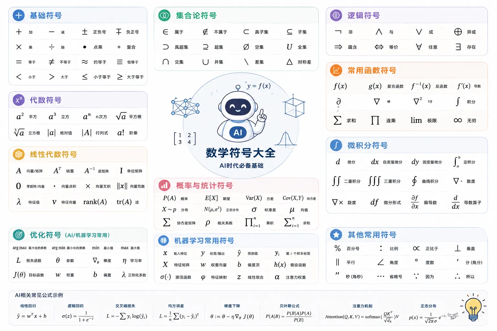

AI，全称人工智能（Artificial Intelligence）让机器从数据中学习规律并做出判断的技术，而数学是描述规律、刻画变化的精确语言。
AI 提出目标，数学提供实现路径——从数据表示到模型训练，每一步背后都是数学在起作用。
可以说，数学是 AI 的骨架，没有数学，AI 只是一个模糊的构想。有了数学，AI 才能被计算、被验证、被真正实现。
这也是为什么理解 AI，绕不开理解支撑它的数学。
AI 数学基础相关内容包含以下几个板块：
这五个板块不是孤立的知识点，而是环环相扣的一条链路：
数据（线性代数）→ 建模（概率统计）→ 衡量误差（信息论）→ 求解（微积分+优化）
后面每一讲的内容，都会不断回到这条链路上，帮你把抽象的公式和具体的 AI 应用对应起来。
你可能会问：现在调用一个 API 就能用上 AI，为什么还要学数学？
如果你只是使用 AI 工具坦白说，不需要多少数学，会写 prompt、会调 API 就够了。
如果你想理解 AI 是怎么工作的就需要具备一定的数学基础，这样才能知道以下问题是为什么：
这些为什么，答案全部藏在数学里，没有数学基础，你只能死记硬背这些现象。有了以上这些数学基础，你能推导出这些现象必然会发生。
如果你想创造新的 AI 方法这才是数学真正发挥威力的地方。所有你听说过的突破——梯度下降、反向传播、注意力机制、扩散模型——最初都是先有数学推导，后有代码实现。想做原创性的工作，数学是绕不开的地基。
一句话总结：数学不是 AI 的装饰，而是 AI 的骨架。代码只是把数学翻译成机器能执行的语言。
这门课程比较适合以下几类人：
不太适合的情况：如果你的目标只是快速用现成模型完成业务需求（比如调用大模型 API 写产品功能），就不一定学。
数学基础
编程基础
其他
看懂 AI 论文和教程的第一道门槛，往往不是数学本身，而是满页的数学符号。

本章节把 AI 学习中最常用的符号整理成表，可以先大概看下，或者后期需要查询的时候再来看：
顺序通读：每个符号都附了什么时候用的说明，大概过下，建立整体印象。
随查随用：读论文或教程卡在某个符号上时，回来查表。
大部分符号配了可运行的 Python 示例，动手算一遍比看十遍更有效。
这些符号从小学数学就在用，是所有公式的地基。
| 符号 | 含义 | 示例 |
|---|---|---|
| 加、减、乘、除 | ||
| 正负号，表示两个可能的取值 | ||
| 不等于 | ||
| 小于、大于、小于等于、大于等于 | ||
| 约等于 | ||
| 绝对值，去掉负号 | ||
| 平方根 | ||
| n 次方根 | ||
| 平方、n 次幂 | ||
| 倒数（负指数） | ||
| 阶乘，从 1 乘到 n | ||
| 无穷大 |
论文里乘号通常省略或写成一个小点： 表示 w 与 x 相乘，两种写法含义完全相同。
数学里字母不是随便选的，不同字母有默认角色。
| 字母 | 默认角色 | AI 语境中的典型含义 |
|---|---|---|
| 常量 | 固定不变的系数 | |
| 变量 | x 是输入特征，y 是输出标签 | |
| 权重与偏置 | 神经网络要学习的参数 | |
| 参数集合 | 模型所有参数的统称，读作 theta | |
| 数量 | 样本数、特征维数 | |
| 圆周率 | ||
| 自然常数 |
同时用 x 和 X 时要注意区分：小写通常表示单个数（标量），大写通常表示矩阵，这在小写一节会展开。
看到 不要慌，它只是"参数"的习惯符号，和 没有本质区别，论文作者选哪个纯看喜好。
AI 中出场率最高的一对函数。
出现在 sigmoid 和 softmax 里，负责把数值"放大或压缩"； 出现在交叉熵损失里，负责"把乘法变成加法"。
| 符号 | 含义 | 示例 |
|---|---|---|
| a 的 n 次方 | ||
| 任何非零数的 0 次方 | ||
| 以 e 为底的指数函数 | ||
| 以 a 为底 x 的对数 | ||
| 自然对数（以 e 为底） | ||
| 论文中通常默认指 |
四条运算规则必须熟练，它们在推导损失函数时会反复用到：
换底公式可以把任意底的对数换成自然对数，编程时常用：
执行以上代码输出结果为：
6.643856189774725 6.643856189774725
为什么要加一个小常数 ε：对数的真数必须大于 0，但训练早期模型可能输出 0 概率，此时 会得到负无穷，导致训练崩溃。
所以实现中通常会写成 ，其中 是一个很小的正数，比如 0.0000001。
函数就是"输入到输出的对应规则"，神经网络本质上是很多层函数的复合。
| 符号 | 含义 | 示例 / 说明 |
|---|---|---|
| 函数，x 经过 f 映射后的结果 | ||
| f 把集合 A 的元素映射到集合 B | 描述函数的"类型签名" | |
| 反函数，撤销 f 的操作 | ||
| 复合函数，先算 g(x) 再代入 f | ||
| x 的变化量 | ||
| y 的预测值（读作 y-hat） | 与真实标签 y 区分 | |
| sigmoid 激活函数 |
机器学习里 （读作 y-hat）专指模型预测值， 指真实标签，两者之差就是预测误差。
复合函数是理解神经网络的关键：一个两层网络本质上就是 ，反向传播逐层计算梯度，靠的正是复合函数求导的链式法则。
执行以上代码输出结果为：
16 True
是 AI 公式里出镜率最高的符号，没有之一。
它的意思是：让下标 i 从下界取到上界，把每一项加起来。
读作"i 从 1 到 n，对 x 下标 i 求和"。分三步读一个求和式：
| 步骤 | 看什么 | 本例中 |
|---|---|---|
| 1 | 求和变量是谁（下标） | i |
| 2 | 求和范围（下界到上界） | 1 到 n |
| 3 | 每一项长什么样 |
求积符号 结构相同，只是把"加"换成"乘"：
两个最常见的 AI 公式都建立在求和上：
均方误差损失：
神经元的加权求和：
执行以上代码输出结果为：
0.1 0.1
集合符号描述"数据属于哪一类"，逻辑符号描述"条件如何组合"，概率与机器学习理论大量使用。
| 符号 | 含义 | 示例 |
|---|---|---|
| 属于 | ||
| 不属于 | ||
| 子集 | ||
| 并集 | ||
| 交集 | ||
| 空集（不含任何元素） | ||
| 实数集合 | ||
| 任意、所有（全称量词） | ||
| 存在（存在量词） | ||
| 逻辑非 | ||
| 逻辑与、逻辑或 | ||
| 推出、蕴含 | ||
| 等价（当且仅当） |
这些符号最常出现在论文的定理和假设部分，例如""读作"对任意大于 0 的 epsilon，存在一个 N"。
这一节解决两个高频困惑：下标到底什么意思，以及区间符号怎么读。
训练数据有很多样本，都用 x 表示会混淆，于是用下标区分：。
当下标有两个时，如 ，通常表示"第 i 行第 j 列"，这正是矩阵的元素。
向量记作 （加粗），它的分量是 ；矩阵 的形状用"行数 × 列数"描述，记作 。
圆括号表示"不包含端点"，方括号表示"包含端点"。
| 符号 | 读法 | 含义 |
|---|---|---|
| 开区间 | a 和 b 之间的所有数，不含两端 | |
| 闭区间 | a 和 b 之间的所有数，含两端 | |
| 半开区间 | 含 b 不含 a | |
| x 属于闭区间 | x 取 0 到 1 之间的值，可以是端点 |
sigmoid 函数的值域是 ，这个开区间意味着输出永远严格大于 0 且小于 1，这正是它能当"概率"用的数学原因。
论文里成片的希腊字母不是装饰，每个都有默认含义，认全了读论文会顺畅很多。
| 大写 | 小写 | 名称 | AI 中的常见含义 |
|---|---|---|---|
| alpha | 学习率 | ||
| beta | 动量系数、Adam 的二阶矩衰减率 | ||
| gamma | 折扣因子（强化学习） | ||
| delta | 变化量、增量 | ||
| epsilon | 极小正数、探索概率 | ||
| theta | 模型参数 | ||
| lambda | 正则化系数 | ||
| pi | 策略（强化学习）、圆周率 | ||
| sigma | 求和 / sigmoid 函数、标准差 | ||
| phi | 特征映射函数 | ||
| omega | 模型权重（部分论文） |
同一个符号在不同领域含义不同： 在激活函数语境是 sigmoid，在统计语境是标准差，在求和公式里大写 是求和算子。看含义先看语境，这是读论文最重要的习惯。
机器学习的核心语言。分类模型输出的"置信度"、损失函数的推导、贝叶斯方法，都建立在这些符号上。
| 符号 | 含义 | 示例 / 说明 |
|---|---|---|
| 事件 A 发生的概率 | ||
| 条件概率：B 发生时 A 的概率 | 竖线读作"在……条件下" | |
| 联合概率：A 与 B 同时发生 | ||
| 贝叶斯公式 | 所有贝叶斯方法的根基 | |
| 期望（平均值） | ||
| 方差（离散程度） | ||
| 均值 | 数据分布的中心 | |
| 方差（sigma 平方） | ||
| 服从……分布 | ||
| 正态分布（高斯分布） | 括号里是均值和方差 | |
| 信息熵 |
交叉熵损失是这些符号的集大成者，把求和、条件概率、对数组合在了一起：
逐个符号拆解： 是第 i 个样本的真实标签， 是模型预测概率， 把概率连乘变成连加，负号让"损失越小越好"。
是"Normal"的花体写法，指正态分布，不是字母 N。花体符号 、 常用来表示分布、损失函数、数据集这类"集合性"的对象。
神经网络的底层结构。深度学习框架的每一次矩阵运算，都在用这些符号。
| 符号 | 含义 | 示例 / 说明 |
|---|---|---|
| 向量（加粗小写） | ||
| 矩阵（加粗大写） | m 行 n 列的数表 | |
| 转置：行列互换 | 行向量变列向量 | |
| 矩阵乘法 | 不是逐元素相乘 | |
| 逐元素相乘（Hadamard 积） | 同形状矩阵对应位置相乘 | |
| 范数（向量的"长度"） | ||
| L1 范数：绝对值之和 | L1 正则化的基础 | |
| 矩阵的逆 | ||
| 单位矩阵 | 对角线为 1，其余为 0 | |
| 点积（内积） |
点积是注意力机制的骨架：transformer 每一层都在计算查询向量与键向量的点积，衡量它们的"相似程度"。
执行以上代码输出结果为：
1.0 3.7416573867739413 1.0 3.7416573867739413
训练的本质是"沿着梯度的反方向调整参数"，所以论文里的优化章节离不开这些符号。
不需要现在就会算，能读懂每张脸即可。
| 符号 | 含义 | 示例 / 说明 |
|---|---|---|
| 导数：y 随 x 的变化率 | ||
| 导数的另一种写法 | ||
| 偏导数：只看 x 变化时 f 的变化率 | 多变量函数用 | |
| 梯度：所有偏导组成的向量 | ||
| 积分，微分的逆运算 | ||
| 极限：x 趋近 a 时的值 |
深度学习最重要的公式只用到了上表的两行，梯度下降的参数更新规则：
逐个符号拆解： 是参数， 表示"用右边的值更新左边"， 是学习率， 是损失函数 J 对参数 θ 的梯度。
一句话翻译：新参数 = 旧参数 − 学习率 × 梯度，即朝着让损失下降最快的方向走一小步。
读作 nabla 或"梯度算子"，它不是数，而是一个"对后面所有变量求偏导"的操作指令，很像编程里的高阶函数。
最后这一节是论文中零散出现但很关键的符号。
| 符号 | 含义 | 示例 / 说明 |
|---|---|---|
| 使 f 取最大值的 x | 返回的是 x，不是最大值本身 | |
| 使 f 取最小值的 x | 训练即求 | |
| f 的最小值 | 返回数值本身 | |
| softmax 函数 | ||
| 函数复合 | ||
| 定义为 | 左边定义为右边的值 | |
| 正比于 | ||
| ReLU 激活函数 | ||
| 大 O 记号：增长量级 | 忽略常数，只看规模 |
分类模型预测时做的正是 ：取概率最大的那个类别，argmax 返回的是类别编号，而不是概率数值。
与 极易混淆： 回答"最大值是多少"， 回答"在哪个 x 处取到最大值"。分类任务关心的是后者。
不需要死记符号表，方法比记忆更有效。
第一，养成逐符号拆解的习惯：拿到公式，先问每个符号是运算符、变量还是函数，再问它在当前语境代表什么，拆完往往就不神秘了。
第二，优先吃透三样东西： 求和、指数与对数、下标记号。它们是读懂线性代数和微积分公式的前置门槛，本文各自有专门小节。
第三，遇到不认识的符号直接搜索"符号名 + 数学含义"，比死磕教材更快。
符号是地图，不是地形。真正的理解来自用它们算过具体例子，文中每个 Python 实例都值得亲手跑一遍。
本章节介绍方程与不等式的变形、函数的核心概念、指数与对数运算、以及求和符号 Σ 与级数收敛。
本章节内容是 sigmoid、softmax、交叉熵、信息熵的共同数学根基，每个知识点都配了可交互的图像演示，拖动滑块比看十遍公式更能建立直觉。
代数变形只依赖一句话。
等式两边同时做同样的运算，等式仍然成立。
只要你对方程左右两边"一视同仁"地加、减、乘、除（除数非零）、开方（注意正负号），方程的解就不会变。
最基础的形式是 。
解 的完整步骤：
3x + 5 = 20 3x = 20 - 5 ← 两边同减 5（移项） 3x = 15 x = 15 / 3 ← 两边同除以 3 x = 5
核心动作只有两个：移项（本质是两边同减）和两边同除。
形式为 ，两种常用解法。
解法一：因式分解。
x² - 5x + 6 = 0 (x - 2)(x - 3) = 0 → x = 2 或 x = 3
解法二：求根公式，适用于所有情况但计算量更大：
其中 叫判别式，记作 ，它直接决定了根的个数：
| 判别式 | 根的情况 | 几何含义（抛物线与 x 轴） |
|---|---|---|
| 两个不同的实根 | 抛物线与 x 轴交于两点 | |
| 一个重根 | 抛物线恰好碰到 x 轴（相切） | |
| 无实根 | 抛物线整体悬在 x 轴上方或下方 |
下面拖动滑块改变 ，观察抛物线形状与判别式如何联动。
交互演示：判别式与抛物线 拖动三个滑块，观察 Δ 的符号变化时，抛物线与 x 轴的交点个数如何改变。 a（开口方向与宽窄）1 b-2 c-3解 的求根公式代入过程：
a=1, b=-2, c=-3 Δ = (-2)² - 4×1×(-3) = 4 + 12 = 16 x = (2 ± √16) / 2 = (2 ± 4) / 2 → x = 3 或 x = -1
先通分或去分母，转化成普通方程求解。
最后必须把解代回原方程检验，确认没有让分母为 0。
让分母变 0 的解要舍去，称为增根。
不等式的变形规则与方程类似，但有一条关键区别。
不等式两边同时乘以（或除以）一个负数时，不等号方向要反转。
解 ：
-2x > -6 ← 两边同减 6 x < 3 ← 两边同除以 -2（负数，不等号从 > 变成 <）
这条规则在机器学习里非常重要：推导优化算法的收敛方向、损失函数下降条件时，符号处理错了方向，结论会完全反过来。
不等式组的解集要取多个不等式解集的交集：
x > 1 x < 5 → 解集为 1 < x < 5
| 技巧 | 做法 | 典型用途 |
|---|---|---|
| 移项 | 把某一项移到等号另一边，同时改变符号 | 所有方程求解的基础动作 |
| 配方法 | 求二次函数顶点、简化损失函数推导 | |
| 换元法 | 把反复出现的复杂子表达式用一个新变量代替 | 化简结构复杂的式子 |
执行以上代码输出结果为：
[3.0, -1.0] [2.0] []
练习：解不等式 。
点击查看答案两边减 9：；两边除以 -3（负数，不等号反转）：。
函数 描述一种"输入到输出"的对应规则：每一个输入 x，有且只有一个输出 y 与之对应。
写作 ，读作"y 是 x 的函数"。
判断定义域，本质是排除让表达式"无意义"的取值：
| 表达式特征 | 限制条件 | 示例 |
|---|---|---|
| 分母 | 不能为 0 | |
| 偶次根号 | 根号下不能为负 | |
| 对数 | 真数必须大于 0 |
对数这一条在 AI 中特别重要：凡是用到 log 的地方（比如交叉熵损失），都要保证输入是正数。这也是为什么很多代码实现里写成 ——加一个很小的常数 ε，防止 报错或产生无穷大。
的值域是 ，因为平方永远非负。
sigmoid 函数 的值域是开区间 ，永远不会等于 0 或 1，只会无限接近。
这正是它被用来表示"概率"的数学原因：概率理论上可以无限接近 0% 或 100%，但不会真的等于。
把一个函数的输出，作为另一个函数的输入，写作 。
计算顺序是先算内层 g(x)，再把结果代入外层 f。
设 ，，求 ：
f(g(x)) = f(x+1) = (x+1)²
通常不等于 ，顺序不能随便换。
为什么复合函数对 AI 重要：神经网络本质上就是很多层函数的复合。
一个两层网络可以写成 ，其中 是第一层（线性变换 + 激活函数）， 是第二层。
反向传播算法能"逐层"计算梯度，靠的正是复合函数求导的链式法则（后续微积分课程详细展开）。
执行以上代码输出结果为：
16 10
练习：设 ，，求 和 ，比较两者是否相同。
点击查看答案两者不同，说明复合函数顺序不能互换。
一句话理解这两个函数的分工：指数函数负责"放大/压缩数值范围"，对数函数负责"把乘除变成加减、把大范围数值压缩到可控范围"。
它们在 AI 的损失函数、激活函数设计中反复出现。
| AI 场景 | 公式 | 用到的性质 |
|---|---|---|
| sigmoid 函数 | 随 x 增大趋于 0，把任意实数压进 (0,1) | |
| softmax 函数 | 指数放大差异，再归一化成概率分布 | |
| 交叉熵损失 | 对数把"概率连乘"变成"数值连加"，避免下溢 | |
| 信息熵 | log 让熵具有可加性 |
指数运算规则：
对数运算规则，与指数规则一一对应：
换底公式，把任意底的对数换成自然对数：
指数函数 与对数函数 互为反函数，图像关于直线 对称。
拖动滑块改变底数 a，观察两条曲线如何联动。
交互演示：指数与对数互为镜像 拖动滑块改变底数 a，两条曲线始终关于灰色虚线 y = x 对称。 底数 a2 蓝色为指数函数 y = a^x，绿色为对数函数 y = log_a(x)，灰色虚线为对称轴 y = x。假设真实标签是"猫"（概率为 1），模型预测"是猫"的概率为 。
如果不用 log，直接用 作为损失，当 p 从 0.5 降到 0.1，损失只是"线性"增长，惩罚力度不够。
用 ：当 （模型极度自信却判断错误）时，，给予极其严厉的惩罚；当 （判断正确）时，，几乎不惩罚。
这是对数函数"在 0 附近陡峭、在 1 附近平缓"的形状在损失函数设计中的直接应用，第二章会用交互图像专门展示这条曲线。
执行以上代码输出结果为：
5.0 5.0 True
练习：计算 ，并用对数法则化简为一个对数。
点击查看答案数列是按顺序排列的一串数，记作 ，简记为 。
两种最基础的数列：
| 类型 | 特征 | 示例 | 通项公式 |
|---|---|---|---|
| 等差数列 | 相邻两项差值恒定（公差 d） | 2, 5, 8, 11, ...（d=3） | |
| 等比数列 | 相邻两项比值恒定（公比 r） | 2, 4, 8, 16, ...（r=2） |
意思是：让下标 i 从 1 变到 n，把每一个 都算出来，再全部加起来。
读 Σ 公式的三步法：先看求和变量是谁（下标），再看求和范围（从哪到哪），最后看每一项长什么样。
AI 公式里几乎总能看到 Σ，比如均方误差损失 ，和神经元的加权求和 。
两个求和公式：等差数列 ，等比数列（）。
级数是数列"无穷项"加起来的和，即 。
无穷多个数加起来，结果会不会是无穷大？这就是收敛与发散的问题：
如果随着项数增加，累加的和趋近于一个确定的有限值，称级数收敛；如果和越来越大或没有固定趋势，称级数发散。
最经典的例子是等比级数 ：
当 时收敛，和为 ；当 时发散。
点击"播放"按钮，观察部分和如何一步步逼近极限值。
交互演示：等比级数的收敛过程 拖动滑块改变公比 r，再点击"播放"，观察部分和 S₁, S₂, ... 如何逼近（或远离）极限 1/(1-r)。 公比 r0.5 红色虚线是理论极限 1/(1-r)。当 |r| 接近 0.9 时，收敛明显变慢；若 |r| ≥ 1（本演示滑块限制在 0.9 以内），级数将发散。训练神经网络时，梯度下降的每一步更新可以看作一个数列，权重更新是否能"收敛"到一个稳定值，判断逻辑和级数收敛的直觉相通。
某些优化算法（如 Adam 里的动量项）本质是对历史梯度做加权指数衰减求和，数学形式就是一个公比小于 1 的等比级数。
循环神经网络（RNN）中，如果某个乘法因子反复相乘且绝对值小于 1，会导致"梯度消失"（对应级数收敛于 0）；大于 1 则导致"梯度爆炸"（对应级数发散）。这是深度学习的经典问题，根源正是等比数列的直觉。
执行以上代码输出结果为：
1 1.0 2 1.5 3 1.75 4 1.875 5 1.9375 6 1.96875 2.0
可以看到每加一项，部分和到极限的差距就缩小一半——这正是公比为 0.5 的等比级数的收敛节奏。
练习：判断级数 是否收敛，如果收敛求其和。
点击查看答案公比 ，满足 ，收敛。
| 主题 | 一句话核心 |
|---|---|
| 方程与不等式 | 两边同时做相同运算；乘/除负数时不等号要反转 |
| 函数概念 | 定义域是"能输入什么"，值域是"能输出什么"，复合函数是"函数套函数" |
| 指数与对数 | 指数放大/压缩数值，对数把乘除变成加减——AI 损失函数的核心工具 |
| 数列与级数 | Σ 是"按规则求和"，级数收敛与否决定模型训练是否稳定 |
本章节我们将把常见函数的图像直观的展示出来，看懂图像的形状比记住公式更重要。
损失函数曲面、激活函数，本质都是这些基础形状的变体，每个函数都配了可切换的交互图像，动手切换、拖动，比看静态插图有效得多。
数学公式描述的是"规则"，图像描述的是"规则长什么样"。
很多深度学习的核心问题，本质上都是"曲线或曲面形状"问题：
| 深度学习问题 | 本质上的形状问题 |
|---|---|
| 为什么某些损失函数更容易优化 | 看它的曲面是不是"碗状"（凸函数） |
| 为什么 sigmoid 会导致训练变慢 | 看它的图像在两端有多"平" |
| 为什么 ReLU 成了默认选择 | 看它的图像有多"简单" |
带着"这是什么形状、两端怎么样、中间怎么样"的问题去看每一个函数，会比死记公式记得更牢。
形状是一条直线。 是斜率，决定倾斜程度和方向（k>0 向右上，k<0 向右下）； 是截距，决定直线与 y 轴的交点。
定义域、值域都是全体实数，变化率（斜率）处处相同，这是"线性"这个词的含义。
在 AI 中的角色：神经元最基础的运算 正是一条高维空间中的线性函数。权重控制方向和倾斜程度，偏置控制整体平移。
形状是一条抛物线。 开口向上（碗状），有最小值； 开口向下（倒扣的碗），有最大值。
顶点是曲线的转折点，可以用配方法求出：，图像关于顶点所在的竖直线对称。
在 AI 中的角色：最简单的凸函数长这样。均方误差损失（MSE）在很多简化场景下就接近这种"碗状"曲面--梯度下降在碗状曲面上非常容易找到最低点，因为无论从哪个方向下山，都会走向同一个谷底。
形状是一条不断加速上升（a>1 时）或不断衰减（0<a<1 时）的曲线，永远不会碰到 x 轴，x 轴是它的水平渐近线。
定义域是全体实数，值域是 。输入线性增长，输出是"爆炸式"增长，这是指数函数最核心的性质。
在 AI 中的角色：softmax 里的 、Adam 优化器动量项里的指数衰减，都是在利用"放大差异"或"逐渐遗忘"的性质。
和指数函数正好是"镜像"关系（以直线 y=x 为对称轴）。曲线在 x 从 0 开始迅速上升，然后增长越来越慢。
定义域是 ，值域是全体实数。输入越大，增长越慢，与指数函数完全相反。
在 AI 中的角色：交叉熵损失里的 ，正是利用对数"在 0 附近极其陡峭、在 1 附近趋于平缓"的形状--模型越自信却错得越离谱，惩罚越重。
形状是波浪线，不断重复（周期性），永远在 -1 到 1 之间摆动（有界性）。sin(x) 从原点出发向上，cos(x) 在 x=0 处达到最大值 1。
周期为 ，值域是 。
在 AI 中的角色：Transformer 的位置编码直接用不同频率的 sin/cos 波形叠加，给序列中每个位置生成一个独特又有规律的"坐标"（第三章展开）。
交互演示：五种基础函数图像画廊 点击按钮切换函数，下方信息卡同步更新形状特征与 AI 角色。激活函数是神经网络每一层的"非线性来源"，它们的形状直接决定了训练的难易。
形状是一条 S 形曲线，从 0 缓慢爬升到 1，中间（x=0 附近）爬升最快，两端趋于平坦。
值域是开区间 ，常被解释为"概率"。
最大的副作用：两端的斜率趋近于 0。当输入的绝对值很大时（比如 x=10 或 x=-10），sigmoid 曲线几乎是平的，梯度几乎为零。
在深层网络里，如果很多层都用 sigmoid，梯度在反向传播时会被这些"平坦区域"一层层削弱，最终传不到前面的层--这就是梯度消失问题最直观的几何来源。
形状是一条折线：x<0 时贴着 x 轴（输出恒为 0），x≥0 时是一条斜率为 1 的直线。
负半轴导数恒为 0，正半轴导数恒为 1，没有 sigmoid 那种"逐渐变平"的过程，计算也极其简单（只需一次比较）。
正半轴的梯度永远是 1，不会随输入变大而衰减，大大缓解了梯度消失问题，这是 ReLU 成为默认激活函数的直觉原因。
它也有自己的问题：负半轴梯度恒为 0，可能导致某些神经元"死掉"不再更新--这从图像形状上也能直接看出来。
和 sigmoid 很像的 S 形曲线，但以原点为中心、值域是 。
相比 sigmoid，tanh 的输出以 0 为中心。如果下一层网络的输入均值接近 0，训练往往更稳定，这是 tanh 在某些场景更受欢迎的原因。
但它并没有解决"两端变平"的根本问题，这也是后来 ReLU 系列函数流行起来的背景。
交互演示：激活函数及其导数 切换激活函数，实线是函数本身，虚线是它的导数（斜率）。注意观察导数曲线的峰值和两端的衰减情况。 sigmoid 的导数最大值只有 0.25，且在 |x| > 4 时几乎为 0--多层连乘后梯度迅速消失，这就是"梯度消失"的几何来源。二分类问题里，模型预测"正确类别"的概率为 ，交叉熵损失就是 。
直觉上你可能会想：用 当损失不是更简单吗？两条曲线放在一起，差距立刻可见。
交互演示：-log(p) 与 1-p 的惩罚对比 拖动滑块改变模型预测概率 p，观察两种损失给出的惩罚差异。当 p 很小（模型自信地犯错）时，-log(p) 的惩罚远大于 1-p。 预测概率 p0.50 蓝色是 -log(p)，绿色是 1-p。前者在 p → 0 时冲向无穷大，后者最多只到 1。执行以上代码输出结果为：
0.25 0.006648056670790155 4.5395807735957664e-05 1.0 0.0 0.5 0.6931471805599453 0.1 2.302585092994046 0.01 4.605170185988091
两个数字值得记住：sigmoid 导数的峰值只有 0.25；p 从 0.5 降到 0.01 时， 的惩罚从 0.69 涨到 4.6。
| 场景 | 看什么形状 | 判断依据 |
|---|---|---|
| 判断损失函数是否好优化 | 曲面是否接近"碗状"（凸） | 越接近碗状，梯度下降越容易找到全局最低点；坑坑洼洼（非凸）可能陷入局部最优 |
| 判断激活函数是否拖慢训练 | 图像两端是否"变平" | 越平，梯度消失问题越明显 |
| 判断函数是否适合做概率输出 | 值域是否有界 | 值域压缩在 (0,1) 类区间才能解释成概率，这是 sigmoid、softmax 被选中的直接原因 |
练习：不看公式，只凭直觉判断--ReLU 和 sigmoid，哪一个更适合放在网络的最后一层做"二分类概率输出"？为什么？
点击查看答案sigmoid 更适合，因为它的值域是 ，天然可以解释成"属于某一类的概率"。
ReLU 的值域是 ，没有上界，不能直接当作概率使用。
| 函数 | 形状关键词 | 对应 AI 概念 |
|---|---|---|
| 线性函数 | 直线，处处斜率相同 | 神经元的加权求和 wx+b |
| 二次函数 | 碗状 / 倒扣碗状 | 损失函数曲面（凸函数直觉） |
| 指数函数 | 加速上升或衰减 | softmax、动量项 |
| 对数函数 | 增长越来越慢 | 交叉熵损失 |
| 三角函数 | 周期性波浪 | 位置编码 |
| sigmoid | S 形，两端变平 | 概率输出，梯度消失的来源 |
| ReLU | 折线，负半轴归零 | 默认激活函数 |
| tanh | S 形，以 0 为中心 | 需要"零均值输出"的场景 |
这一章建立向量"方向 + 长度"的直觉，理解基础三角函数，并把坐标系的空间直观作为学习线性代数"向量空间"的铺垫。
单词的 embedding、推荐系统的相似度计算、Transformer 的位置编码，全都建立在这一章的几何直觉上。
普通数字（标量）只携带"大小"一个信息，比如"温度是 25 度"。
向量同时携带两个信息：方向和长度（模）。
在平面直角坐标系中，向量写成坐标形式 ，表示"从原点出发，沿 x 方向走 x 个单位、沿 y 方向走 y 个单位"所到达的位置，箭头本身就编码了方向和长度。
这就是勾股定理：向量的长度是它在 x 轴和 y 轴上的分量构成的直角三角形的斜边。
| 运算 | 代数规则 | 几何含义 |
|---|---|---|
| 加法 | 首尾相接：把第二个向量的起点接到第一个向量的终点 | |
| 数乘 | 只改变长度（k 为负时反转方向），不改变方向所在的直线 |
其中 是两个向量的夹角。点积的符号有明确的几何意义：
| 点积符号 | 夹角范围 | 几何含义 |
|---|---|---|
| 方向大致相同 | ||
| 两向量垂直（正交） | ||
| 方向大致相反 |
在机器学习里，一条样本数据（一张图片、一段文字的 embedding、一个用户的特征）本质上就是高维空间里的一个向量。
两个词的 embedding 向量点积（或夹角余弦）越大，通常代表这两个词语义越相似，这是词向量、推荐系统"相似度计算"的数学基础。
神经网络每一层做的 ，本质就是权重向量和输入向量的点积。
执行以上代码输出结果为：
5.0 5.0 24 0.96
余弦相似度 0.96 意味着两个向量方向非常接近，这正是"语义相似"的几何表达。
练习：向量 ，求它的长度 。
点击查看答案最初学三角函数，往往从直角三角形的边长比值开始：
更通用、也更适合 AI 场景的理解方式是单位圆定义：在半径为 1 的圆上，从 x 轴正方向逆时针转过角度 所对应的点，它的坐标就是 。
这样定义的好处是： 可以取任意角度（不局限于 0°~90°），sin 和 cos 随 θ 变化不断"绕圈"，呈现出周期性（每转一圈 360°，即 弧度，数值重复一次）。
点击"播放"，看单位圆上的点如何转出一条正弦波。
动态演示：单位圆转出正弦波 单位圆上的点随角度 θ 逆时针转动，它的高度（sin θ）在右侧被逐点记录，连成红色正弦曲线；水平投影（cos θ）以蓝色标出。 速度1.0×| 性质 | 表达式 | 含义 |
|---|---|---|
| 有界性 | 无论角度多大，值永远落在 [-1, 1] | |
| 周期性 | 每转一圈，数值重复一次 | |
| 平方关系 | 单位圆半径为 1 的直接推论（勾股定理） |
Transformer 模型在处理一串文字时，天生不知道"词的先后顺序"（它并行处理所有词）。
为了把"位置"信息编码进模型，Transformer 使用了这样的公式：
这里用到 sin/cos 的两个核心性质：
有界性：无论序列多长，位置编码的数值都不会爆炸，始终在 [-1, 1] 之间，不干扰其他数值计算。
周期性 + 不同频率叠加：不同维度使用不同频率的 sin/cos 波形，模型既能区分"相邻位置"（高频波形变化快），也能感知"远距离位置关系"（低频波形变化慢）。
这背后和信号处理中的傅里叶变换思想相通：任何复杂信号都可以用一系列不同频率的正弦波叠加来表示。
交互演示：位置编码热力图 横轴是序列中的位置（0~49），纵轴是编码维度（0~15），颜色是编码值。可以看到低维度（上方）波形变化快、高维度（下方）波形变化慢--不同频率的 sin/cos 叠加在一起。 红色为正值，蓝色为负值，与 sin/cos 的波形一致。真实 Transformer 的编码维度通常是 512 甚至更高，这里只取前 16 维示意。执行以上代码输出结果为：
0 1.0 2 0.316228 4 0.1 0.14112
维度 0 的频率是 1.0，维度 4 就衰减到 0.1--频率沿维度指数衰减，这正是"高频在前、低频在后"的布局。
平面直角坐标系 用两条互相垂直的数轴，给平面上每一个点一个唯一的"地址"。
这个直观想法可以直接推广：三维空间加一个 z 轴，n 维空间就是 。
虽然 n 维空间没法直接画出来，但代数上的处理方式完全一样：每个坐标轴（"维度"）仍然是相互独立的一个方向。
| 二维直觉 | 高维推广 | AI 中的应用 |
|---|---|---|
| 投影：向量在某轴上的分量 | 高维向量在任意方向上的投影 | 点积 / 正交分解是降维算法的基础 |
| 正交：两方向垂直、互不干扰 | 高维空间的"正交基" | PCA 降维寻找相互正交的主方向 |
| 基：x 轴和 y 轴是最基础的参照方向 | 任何向量都写成基向量的组合 | embedding 空间的维度就是基的数量 |
很多语言模型的 embedding 维度是几百到上千（比如 768 维），你没法在纸上画出这个空间，但可以借助二维、三维里熟悉的操作去"想象"它。
想象你在描述一部电影，可以用"打斗场面多少""搞笑程度""剧情复杂度"等很多个维度去打分。
每一部电影都对应这个"多维评分空间"里的一个点（向量）。
两部电影越像，它们对应的向量在空间里就越"接近"（点积大、夹角小）。
这正是推荐系统"相似内容推荐"背后的几何直觉，而这套直觉的源头，就是二维坐标系里"两个点离得近不近"的空间感。
练习：如果一个向量在 x 轴方向的投影很大、在 y 轴方向的投影几乎为 0，这说明这个向量的方向大致朝哪？
点击查看答案方向几乎沿着 x 轴：它在 y 方向上"贡献"很小，说明它和 y 轴接近垂直、和 x 轴接近平行。
| 主题 | 一句话核心 |
|---|---|
| 平面向量 | 同时携带"方向"和"长度"两个信息，是高维数据（embedding）的基本单位 |
| 点积 | 衡量两个方向"有多接近"，是相似度计算的数学基础 |
| sin / cos | 单位圆上的坐标，具有周期性和有界性，是位置编码的数学工具 |
| 坐标系 | 二维/三维的空间直觉，是理解 n 维向量空间、投影、正交等概念的起点 |
之前的章节我们知道了各种规则和概念，本章节我们将看看大家的熟练度，是否可以自己把公式推一遍。
这个能力直接决定你能不能跟着论文里的推导走下去，而不是在作者跳步的地方卡住，每个知识点都配了交互演示，特别是 (a+b)² 的几何切分动画，看一遍就能明白"交叉项 2ab 是从哪来的"。
读论文时经常会遇到这种情况：作者写了"经过化简，可得……"，中间跳过了三五步。
如果符号运算不够熟练，这几步跳跃会直接把你挡在门外。
如果熟练，你可以自己把这几步补上，真正"跟上"作者的思路，而不是被动接受结论。
同样一条规则，"知道"和"能闭着眼睛熟练运用"是两个能力层级。这一章练的就是后者。
把 理解成"边长为 a+b 的正方形的面积"，可以把这个正方形切成 4 块：
| 区域 | 形状 | 面积 |
|---|---|---|
| 左上角 | 边长为 a 的正方形 | |
| 右上角 | 长 b、宽 a 的长方形 | |
| 左下角 | 长 a、宽 b 的长方形 | |
| 右下角 | 边长为 b 的正方形 |
四块面积加起来 。
这个"2ab"不是凭空冒出来的，而是两个交叉的长方形。点击下方"展开"按钮，看四块面积如何分开。
交互演示：(a+b)² 的几何切分 拖动滑块改变 a 和 b 的比例（总边长固定为 4），点击"展开"看正方形被切成四个部分，再点"复原"拼回去。 a2.5按照"每一对变量都会产生一个交叉项"的规律，可以直接写出：
推导逻辑：把 看成 ，展开时每一项和每一项两两相乘。
相同变量相乘得到平方项（），不同变量相乘会出现两次（比如 和 ），合并后就是 。
这个规律在向量运算里以另一种形式反复出现，比如计算两个向量差的模长平方：
本质就是把 里的"数"换成了"向量"，把"乘法"换成了"点积"。
看到论文里出现类似的展开，可以直接联想到这里学的规则--新公式往往是旧规则换了一层皮，这正是"符号运算能力"帮你"看穿"新公式的方式。
执行以上代码输出结果为：
2 3 True 5 1 True 0.5 2.5 True -1 4 True True
这个"随机代入验证"的方法非常实用：忘了公式细节时，代几个数就能确认自己记的版本对不对。
练习：展开 和 。
点击查看答案分别把 和 代入 即可。
配方法的目标是把 这种"缺一块"的式子，凑成一个完整的平方：
例题：把 配方，得到 。
验证：展开 ，确实相等。
配方法的两个典型用途：
| 用途 | 做法 | 例子 |
|---|---|---|
| 求二次函数顶点 | 直接看出顶点 (-3, -7)，不需要画图或求导 | |
| 凑完全平方简化推导 | 把复杂多项式凑成平方项 | 最小二乘法、正态分布最大似然估计的中间步骤 |
遇到一个复杂表达式，通常按这个顺序尝试：
| 顺序 | 技巧 | 说明 |
|---|---|---|
| 1 | 合并同类项 | 把相同的变量幂次合并 |
| 2 | 提取公因式 | 找出所有项共有的因子提出来 |
| 3 | 利用恒等式 | 套用 、 等现成公式 |
| 4 | 换元 | 反复出现的复杂子表达式用新变量代替 |
换元法例题：化简 。
令 t = x² + 1
原式 = t² - 3t + 2 = (t-1)(t-2)
代回 t：
= (x²+1-1)(x²+1-2)
= x² · (x²-1)
= x⁴ - x²
| 层级 | 表现 |
|---|---|
| 能读懂 | 看着推导步骤，能理解"这一步为什么成立" |
| 能推导 | 合上书，自己能把这几步重新走一遍 |
很多人卡在论文阅读上，卡的不是"新知识"，而是这一层：公式用到的都是前三章讲过的规则，只是需要在没有提示的情况下自己组织出正确的步骤顺序。
问题：给定 n 个数据点，想找一个常数 c，使得所有点到 c 的"平方距离之和" 最小，求最优的 c。
推导过程：
设 f(c) = Σᵢ (xᵢ - c)²
展开每一项（用到 (a-b)² 公式）：
f(c) = Σᵢ (xᵢ² - 2cxᵢ + c²)
= Σᵢ xᵢ² - 2c·Σᵢxᵢ + n·c² （把 Σ 拆到每一项，c 是常数可以提出来）
这是关于 c 的二次函数，开口向上（c² 系数为 n > 0），
顶点（最小值点）在 c = -B/2A，这里 B = -2Σxᵢ，A = n
代入：c = -(-2Σxᵢ) / (2n) = Σxᵢ / n
结论：最优的 c 正好是所有数据点的平均值。
这个推导只用了本章和第一章的知识（平方展开、Σ 求和、二次函数顶点公式），却推出了统计学里"为什么均值是最小化平方误差的最优点"这个重要结论。
拖动滑块亲手验证：c 偏离平均值时，平方距离之和如何变大。
交互演示：为什么均值让平方误差最小 5 个数据点固定为 1, 3, 4, 8, 9（均值 5）。拖动滑块移动 c，观察 f(c) = Σ(xᵢ-c)² 的变化，c = 5 时误差最小。 c1.0 灰点是数据点，红色抛物线是 f(c)，蓝点是当前的 c 位置。无论 c 往哪边偏，误差都大于 c = 5 处的最小值。执行以上代码输出结果为：
5.0 46.0 0 171 3 66 5 46 7 66 10 171
注意 c=3 和 c=7 的误差相等（都是 66）--它们到均值 5 的距离相同，这正是抛物线"关于顶点对称"的体现。
练习：尝试不看上文，独立重新推导一遍"均值最小化平方误差"的过程，只用三个工具：平方展开公式、Σ 的线性性质、二次函数顶点公式。
点击查看答案展开 ，识别为开口向上的二次函数，顶点 ，即均值。
| 技能 | 一句话核心 |
|---|---|
| (a+b)² 展开 | 几何上是"切正方形"，交叉项来自两个方向的乘积，可推广到多变量和向量 |
| 配方法 | 把"缺一块"的式子凑成完整平方，用于求顶点、简化推导 |
| 化简思路 | 合并同类项 → 提取公因式 → 套用恒等式 → 换元 |
| 独立推导 | 能不看答案重新走一遍推导，是读懂论文公式的分水岭 |
之前的章节我们介绍了代数、函数、几何，都是在"数"和"图形"上做文章。
本章节我们要处理更底层的东西：怎么描述"条件"（逻辑）、怎么描述"一堆东西的集合"（集合论）。
机器学习里几乎所有涉及"概率""不确定性"的内容，底层语言都是集合论；所有涉及"条件判断""算法流程"的内容，底层语言都是逻辑。
为真，当且仅当 p 和 q 都为真。
直觉：两个条件必须同时满足，少一个都不行--就像"必须同时下雨并且没带伞，才会淋湿"。
为真，只要 p 和 q 至少有一个为真。
数学里的"或"是"可兼或"：两个都为真时，整体也是真。它不是日常口语里"二选一"的意思。
就是把 p 的真假值反过来：p 为真时 为假，p 为假时 为真。
读作"如果 p，那么 q"，它是最容易反直觉的一个：
| p（前件） | q（后件） | 说明 | |
|---|---|---|---|
| 真 | 真 | 真 | 正常情况 |
| 真 | 假 | 假 | 唯一为假的情况："前真后假" |
| 假 | 真 | 真 | 前件为假，整体算真 |
| 假 | 假 | 真 | 前件为假，整体算真 |
最反直觉的两行：当 p 为假时，无论 q 是什么， 都被判定为真。
一个帮助理解的例子："如果明天下雨（p），我就带伞（q）"。
如果明天没有下雨（p 为假），那么无论你带没带伞，都不能说这句话是"假的"--它根本没有对"不下雨"的情况做出任何承诺。
读作"p 当且仅当 q"，表示 p 和 q 的真假值永远一致（要么同真，要么同假）。
点击下面的开关，亲手"点亮"每一种组合，观察四种运算的结果。
交互演示：逻辑运算真值开关 点击 p、q 两个开关切换真假，下方四张卡片实时显示各逻辑运算的结果。重点观察 p 为假时，p ⇒ q 永远为真。 p真 q真 p ∧ q真 p ∨ q真 ¬p假 p ⇒ q真 试着把 p 关成"假"、q 保持"真"--p ⇒ q 依然是"真"，这就是蕴含最反直觉的地方。阅读算法伪代码、模型训练的条件判断（比如"提前停止"的触发条件）时，都是逻辑表达式的组合。
决策树模型本质上就是一层层的"如果……那么……"（蕴含）判断组成的。
概率论的很多定理，在证明过程中大量使用逻辑运算来描述事件之间的关系。
执行以上代码输出结果为：
p q p∧q p∨q ¬p p⇒q True True True True False True True False False True False False False True False True True True False False False False True True
第二行就是那个唯一的"假"：p 真、q 假，蕴含不成立。
练习：p = "今天是周末"为假，q = "我要上班"为真。请判断 的真假。
点击查看答案p 为假，根据真值表，无论 q 是什么， 都为真。
集合就是"一堆确定的东西"的整体，比如 表示包含 1、2、3 三个元素的集合。
| 符号 | 含义 | 示例 |
|---|---|---|
| x 是集合 A 的元素（属于） | ||
| x 不是集合 A 的元素 | ||
| 空集，不包含任何元素 | ||
| 全集，讨论范围内"所有东西" | 掷骰子的所有可能结果 |
如果集合 A 中的每一个元素都同时是集合 B 的元素，就说 A 是 B 的子集，记作 。
例如 ，则 。
设 ：
| 运算 | 符号 | 含义 | 结果 |
|---|---|---|---|
| 并集 | A 和 B 的元素合在一起（重复只算一次） | ||
| 交集 | 既在 A 又在 B 里的元素 | ||
| 差集 | 属于 A 但不属于 B | ||
| 补集 | 全集 U 中不属于 A 的部分，即 | 取决于 U |
集合论和逻辑运算其实是"同一件事的两种语言"：
| 集合语言 | 逻辑语言 |
|---|---|
这也是为什么这两节放在同一章：它们是同一套底层逻辑的两种表达方式。
点击按钮切换集合运算，看 Venn 图中被点亮的区域。
交互演示：Venn 图与集合运算 设 U = {1..10}，A = {1,2,3,4,5}，B = {4,5,6,7}。点击按钮切换运算，橙色区域是被选中的结果。执行以上代码输出结果为：
{1, 2, 3, 4, 5, 6, 7}
{4, 5}
{1, 2, 3}
{1, 2, 3, 6, 7}
{6, 7, 8, 9, 10}
练习：，（在 1~12 范围内）。求 和 。
点击查看答案概率论里的"事件"，本质上就是一个集合：所有满足某个条件的"可能结果"的集合。
比如掷一枚骰子，"掷出偶数"这个事件对应的集合就是 。
| 概率语言 | 集合语言 | 含义 |
|---|---|---|
| A 或 B 发生 | 事件 A、B 至少一个发生 | |
| A 且 B 都发生 | 事件 A、B 同时发生 | |
| A 不发生 | A 的补集 | |
| A、B 互斥 | 两个事件不可能同时发生 |
这个公式的几何直觉：两个圆圈重叠部分被算了两次，要减掉一次。
用 Venn 图（集合的图形化表示）可以非常直观地看到这一点。
读作"在 B 已经发生的条件下，A 发生的概率"。
直觉：一旦知道 B 发生了，讨论问题的"全集"就从原来的 U 缩小到了 B。
这时候 A 发生的概率，自然就是"A 和 B 的交集"占"新全集 B"的比例。
条件概率还可以反过来写：
整理一下，就得到贝叶斯定理的核心式：
它是很多机器学习模型（如朴素贝叶斯分类器）的理论基础，推导起点正是"条件概率是集合交集占比"这个朴素的集合直觉。
经典的疾病检测问题最能体现贝叶斯的威力：检测"准确率 95%"不等于"检测阳性后患病概率 95%"。拖动滑块亲手算一算。
交互演示：贝叶斯定理与疾病检测 100 个圆点代表 100 个人。调整患病率、检测灵敏度、误报率，观察"检测阳性后真正患病"的比例如何变化。 患病率 P(A)10% 灵敏度 P(B|A)90% 误报率 P(B|¬A)9% 患病且阳性 患病但漏检 健康但误报阳性 健康且阴性 试试把患病率拉到 1%：即使检测灵敏度高达 90%，阳性中真正患病的人也可能不到两成--大量误报淹没了真阳性。执行以上代码输出结果为：
0.059000000000000004 0.16101694915254236
结论很反直觉：检测"准确率 95%"，但阳性结果中真正患病的概率只有约 16%--因为患病率本身只有 1%，大量误报淹没了真阳性。
这正是贝叶斯定理的价值：它告诉你如何用新证据（检测结果）更新旧信念（患病率），这也是朴素贝叶斯分类器、贝叶斯优化的共同思想源头。
练习：一副 52 张牌中，事件 A = "抽到红桃"（13 张），事件 B = "抽到 A"（4 张，其中 1 张是红桃 A）。求 和 。
点击查看答案| 主题 | 一句话核心 |
|---|---|
| 逻辑运算 | ∧ 要求都真，∨ 只需一个真，⇒ 只有"前真后假"时才是假的（最反直觉） |
| 集合运算 | ∪ 是合并，∩ 是共有部分，与逻辑运算一一对应 |
| 概率与集合 | 事件就是集合，P(A∪B)、P(A∩B)、条件概率都能用集合的重叠关系直观理解 |
在 AI 的世界里，所有数据——无论是一张图片、一段文字、还是一段音频——最终都被组织成一种统一的形式：张量（Tensor）。
张量是一个统称，按照维度的不同，它有不同的名字。
另一种理解方式是「嵌套」——标量在最里面，外面套一层变成向量，再套一层变成矩阵，继续套就是更高维的张量。
张量：一摞表 矩阵：一张表 向量：一行数字 标量：一个数在 PyTorch 和 TensorFlow 等深度学习框架中，所有数据统一用「张量（Tensor）」来表示。
标量是 0 维张量，向量是 1 维张量，矩阵是 2 维张量——它们是张量的特殊情况。
就是一个数。比如气温 26°C。在 NumPy 中 shape 显示为空元组 ()。
一串有序的数。比如一天中每小时的气温记录。Shape 为 (n,)，n 是元素个数。
一张表格，有行和列。比如一周七天、每天 24 小时的气温表。Shape 为 (行数, 列数)。
多层数据叠放。比如全国 300 个城市、每个城市一周 7 天、每天 24 小时的气温。Shape 为 (城市数, 天数, 小时数) 即 (300, 7, 24)。
维度可以简单理解为：你需要几个「坐标」才能锁定一个具体的数。
下面用一个递进的场景来巩固理解。
场景一：记录此刻气温
你只需要写下一个数：26。这就是一个 标量。它没有维度，就是一个孤零零的值。
场景二：记录一天的气温变化
你从早到晚每小时测一次，得到 24 个数：[22, 23, 24, 26, 28, ...]。
这是一个 向量。你需要一个坐标（第几个小时）来定位某个温度值。
场景三：记录一周的气温
你把七天的数据列成一张表格：每行是一天，每列是一个小时。
这是一个 7 行 24 列的 矩阵。你需要两个坐标（第几天、第几小时）来定位。
场景四：记录全国城市的气温
全国 300 个城市，每个城市都有一张 7×24 的表格。
这 300 张表格叠在一起，形成一个 3D 张量。你需要三个坐标（哪个城市、第几天、第几小时）。
标量是一个单独的数，记作 \( a = 26 \)，或者 \( x \in \mathbb{R} \)（x 属于实数集）。
向量是一组有序的数，通常竖着写（列向量）：
\[ \mathbf{v} = \begin{bmatrix} v_1 \\ v_2 \\ \vdots \\ v_n \end{bmatrix} \in \mathbb{R}^{n} \]\( \mathbb{R}^{n} \) 表示这是一个 n 维实数向量，\( v_1 \) 是第 1 个分量，\( v_n \) 是第 n 个分量。
矩阵是一个 m 行 n 列的矩形数组：
\[ \mathbf{A} = \begin{bmatrix} a_{11} & a_{12} & \cdots & a_{1n} \\ a_{21} & a_{22} & \cdots & a_{2n} \\ \vdots & \vdots & \ddots & \vdots \\ a_{m1} & a_{m2} & \cdots & a_{mn} \end{bmatrix} \in \mathbb{R}^{m \times n} \]记作 m×n 矩阵（m 行 n 列），\( a_{ij} \) 表示第 i 行第 j 列的元素。
张量是向量和矩阵向任意维度的推广。
一个 k 维张量的形状记作 \( (d_1, d_2, \dots, d_k) \)，共 \( d_1 \times d_2 \times \cdots \times d_k \) 个元素。
| 名称 | 维度 | Shape 示例 | 坐标数 | 数学记号 |
|---|---|---|---|---|
| 标量 | 0 | () | 0 | \( x \in \mathbb{R} \) |
| 向量 | 1 | (n,) | 1 | \( \mathbf{v} \in \mathbb{R}^{n} \) |
| 矩阵 | 2 | (m, n) | 2 | \( \mathbf{A} \in \mathbb{R}^{m \times n} \) |
| 3D 张量 | 3 | (d1, d2, d3) | 3 | \( \mathcal{T} \in \mathbb{R}^{d_1 \times d_2 \times d_3} \) |
下面用 NumPy 来创建和查看这些数据结构。shape 属性 是理解数据维度的关键。
运行输出：
标量: shape= () ndim= 0 向量: shape= (8,) ndim= 1 矩阵: shape= (2, 3) ndim= 2 3D 张量: shape= (2, 2, 3) ndim= 3 4D 张量: shape= (3, 2, 2, 1) ndim= 4
| 属性 | 含义 | 标量 | 向量(8个元素) | 矩阵(2×3) | 3D(2×2×3) |
|---|---|---|---|---|---|
.shape | 每个维度的大小 | () | (8,) | (2, 3) | (2, 2, 3) |
.ndim | 维度数量 = len(shape) | 0 | 1 | 2 | 3 |
.size | 元素总数 | 1 | 8 | 6 | 12 |
调试深度学习代码时，看到 shape mismatch 报错，第一步就是打印 shape 查看数据维度。
理解 shape 是学习 NumPy 和所有深度学习框架的第一技能。
下面把 3×3×3 张量画成空间中的 27 个点：三个坐标轴分别对应"行、列、通道"，每个点的颜色深浅代表该位置的数值大小。拖动鼠标可以旋转视角。
3×3×3 张量的空间分布 · 颜色越亮代表数值越大注意观察：固定"通道"这一层不变，你会看到一个 3×3 的平面——那正是一个二阶张量（矩阵）。这也是为什么我们说"矩阵是张量的一个特例"。
ImageNet 分类任务中，输入图片被统一缩放到 224×224 像素。单张彩色图片是 shape 为 (224, 224, 3) 的 3D 张量。
实际训练时，GPU 一次处理一个 batch（如 32 张图片），数据变为 4D 张量 (32, 224, 224, 3)。
注意不同框架的通道位置约定不同：TensorFlow/Keras 使用 (N, H, W, C)（通道在最后），PyTorch 使用 (N, C, H, W)（通道在最前）。
当你看到报错 "shape mismatch: (32, 224, 224, 3) vs (32, 3, 224, 224)"，就是通道位置不一致导致的——用 .permute() 或 .transpose() 调整即可。
BERT 模型的词表大小为 30522，隐藏维度为 768。它的词嵌入矩阵 shape 为 (30522, 768)——每行是一个词的 768 维向量。
GPT 系列也是如此：GPT-2 的词表 50257，嵌入维度 768（小模型）到 1600（大模型）。
当你输入一段文本，模型首先查表把每个词 ID 转成对应的嵌入向量，这就是「查表取行」——一个矩阵索引操作。
一个经典的 MNIST 手写数字识别网络：输入 784 维（28×28 像素展平），第一隐藏层 256 维。
权重矩阵 W₁ 的 shape 为 (256, 784)。每次前向传播计算 h = W₁ @ x，就是 256×784 矩阵乘 784 维向量。
整个神经网络的前向传播，本质上就是一层层的矩阵乘法和激活函数的交替。
视频可以理解为多帧图片的序列。一段 16 帧的 224×224 彩色视频片段，shape 为 (16, 224, 224, 3)。
加上 batch 维度后变成 5D 张量 (8, 16, 224, 224, 3)——这就是视频分类模型（如 3D-ResNet）的标准输入。
向量可以理解为从原点出发的一支箭——有长度、有方向。
两个向量相加，就是把两段位移「拼接」在一起。
把第二个向量 b 的起点接到第一个向量 a 的终点。
从 a 的起点到 b 的终点的连线，就是 a + b。
直觉：「先走 a，再走 b」
以 a 和 b 为两条邻边，画一个平行四边形。
从起点出发的对角线，就是 a + b。
直觉：两种法则结果完全相同
用一个标量（普通数字）去乘向量，结果是 改变向量的长度，但保持它所在的直线方向不变。
|c| > 1
拉伸
如 2v：长度 ×2
0 < |c| < 1
缩短
如 0.5v：长度 ÷2
c < 0
反转方向
如 -v：方向相反
c = 0
缩为一个点
如 0v = 零向量
数乘只改变向量的「长度」，不改变它所在直线的方向（负数反转方向但仍在同一条直线上）。
这个性质叫做 共线性——数乘前后的两个向量总是在同一条直线上。
向量加法：导航中的多段行程
你从家出发，先向东走 300 米（向量 a = (300, 0)），再向北走 400 米（向量 b = (0, 400)）。
最终你在家的东北方向，距离 500 米处——这就是 a + b = (300, 400)。
数乘：视频倍速播放
正常速度走 5 步用 5 秒。用 2 倍速——同样的方向、同样步数，只用了 2.5 秒。
位移向量没变方向，但「每步的大小」翻倍了——这就是 2v 的效果。
反向：走回头路
你向东走了 100 米（v = (100, 0)），然后想回到原点——你需要向西走 100 米（-v = (-100, 0)）。
负号就是向量方向的「掉头」指令。
两个同维度的向量相加，就是对应位置的元素分别相加。
\[ \mathbf{a} + \mathbf{b} = \begin{bmatrix} a_1 \\ a_2 \\ \vdots \\ a_n \end{bmatrix} + \begin{bmatrix} b_1 \\ b_2 \\ \vdots \\ b_n \end{bmatrix} = \begin{bmatrix} a_1 + b_1 \\ a_2 + b_2 \\ \vdots \\ a_n + b_n \end{bmatrix} \]前提条件：两个向量维度必须相同，否则加法无意义。
向量减法 = 加上反方向的向量：\( \mathbf{a} - \mathbf{b} = \mathbf{a} + (-\mathbf{b}) \)
一个标量 c 乘以一个向量，就是把向量的每个元素都乘以 c：
\[ c \cdot \mathbf{v} = c \cdot \begin{bmatrix} v_1 \\ v_2 \\ \vdots \\ v_n \end{bmatrix} = \begin{bmatrix} c \cdot v_1 \\ c \cdot v_2 \\ \vdots \\ c \cdot v_n \end{bmatrix} \]| 性质 | 公式 | 直觉 |
|---|---|---|
| 交换律 | \( \mathbf{a} + \mathbf{b} = \mathbf{b} + \mathbf{a} \) | 先走哪段都一样 |
| 结合律 | \( (\mathbf{a}+\mathbf{b})+\mathbf{c} = \mathbf{a}+(\mathbf{b}+\mathbf{c}) \) | 怎么分组走都一样 |
| 分配律 | \( c(\mathbf{a}+\mathbf{b}) = c\mathbf{a} + c\mathbf{b} \) | 先加再拉伸 = 先拉伸再加 |
a + b = [4 3] a - b = [2 -1] 2.5 * a = [7.5 2.5] -a = [-3 -1] a + 10 = [13 11] a * 3 = [9 3]
拖动下方红色向量 a 和蓝色向量 b 的端点，观察绿色和向量 a+b 实时变化。体会三角形法则和平行四边形法则：
Word2Vec 和 GloVe 等词嵌入模型最著名的发现：向量的加减法有语义含义。
\[ \text{vec}(\text{国王}) - \text{vec}(\text{男人}) + \text{vec}(\text{女人}) \approx \text{vec}(\text{女王}) \]减法是去掉「男性」特征分量，加法是加上「女性」特征分量。结果向量在嵌入空间中距离「女王」最近。
这种语义运算不仅限于性别——「巴黎 - 法国 + 意大利 ≈ 罗马」也是同样的原理。向量的加法和减法在此起到了「特征编辑」的作用。
每个神经元的计算 \( y = Wx + b \) 中，+b 就是向量加法——偏置将 wx 的结果整体平移。
如果没有偏置 b，模型在 x=0 时输出必定为 0，这严重限制了模型的表达能力。偏置相当于给每个神经元一个「默认激活值」。
训练时的参数更新 \( \theta_{new} = \theta_{old} - \eta \nabla J \) 就是数乘（学习率 × 梯度）与向量减法的组合。
数乘控制每步更新的大小（学习率越大步长越大），减法将参数向损失减小的方向移动。
在训练神经网络之前，通常会对数据做「减均值」操作：\( x_{norm} = x - \mu \)。这就是向量减法——将数据中心平移到原点，有助于梯度下降更快收敛。
点积（Dot Product）是 AI 中使用频率最高的向量运算。
全连接层的计算、注意力机制的相似度匹配——它们的核心都是点积。
点积有 两种等价的视角，理解它们之间的桥梁是本章的核心收获。
对应位置的元素相乘，然后求和。
\( \mathbf{a} \cdot \mathbf{b} = \sum a_i b_i \)
例如：(2,3) · (4,1) = 2×4 + 3×1 = 11
将一个向量投影到另一个向量上，然后两段长度相乘。
\( \mathbf{a} \cdot \mathbf{b} = \|\mathbf{a}\| \|\mathbf{b}\| \cos\theta \)
夹角 θ 越小，点积越大
两种算法得出的是同一个值——这是数学中一个极其优雅的等式。
购物账单：数量 × 单价
你买了 2 瓶可乐（每瓶 3 元）、3 包薯片（每包 5 元）、1 桶泡面（每桶 4 元）。
数量向量 (2, 3, 1) 和价格向量 (3, 5, 4) 的点积就是总价：2×3 + 3×5 + 1×4 = 25 元。
推购物车：力 × 位移
你推购物车的力是一个向量（有大小和方向），车的位移是另一个向量。
物理学中，功 = 力在位移方向上的分量 × 位移大小 = 力向量与位移向量的点积。
如果你向侧面推（垂直方向），完全不做功——点积为零。
这意味着：给定两个向量的坐标，就能算出它们之间的夹角，不需要量角器。
| 性质 | 公式 | 说明 |
|---|---|---|
| 交换律 | \( \mathbf{a} \cdot \mathbf{b} = \mathbf{b} \cdot \mathbf{a} \) | 顺序不影响 |
| 分配律 | \( \mathbf{a} \cdot (\mathbf{b} + \mathbf{c}) = \mathbf{a}\cdot\mathbf{b} + \mathbf{a}\cdot\mathbf{c} \) | 可先加再点积 |
| 自身点积 | \( \mathbf{a} \cdot \mathbf{a} = \|\mathbf{a}\|^2 \) | 向量与自己的点积 = 长度的平方 |
a · b = 13 三种方法结果一致: True ||a||=3.74, ||b||=4.58, cosθ=0.7580 夹角 = 40.7° [1,0] · [0.8,0.6] = 0.8 (锐角，正) [1,0] · [0,1] = 0 (直角，零) [1,0] · [-1,0] = -1.0 (钝角，负)
拖动向量 a 和 b 的端点，观察点积值和夹角如何变化。点积的正负决定了锐角/钝角/直角：
一个神经元计算 \( y = w_1x_1 + w_2x_2 + \cdots + w_nx_n + b \)。加和部分就是权重向量 w 和输入向量 x 的 点积。
当你看到一个全连接层 nn.Linear(784, 256)，它在数学上做的事就是：256 个神经元，每个神经元拿自己的权重向量（784 维）与输入向量做点积，再加上偏置。256 个点积并行计算 = 矩阵乘法。
Transformer 的核心操作：Query 向量与 Key 向量做点积，结果越大表示两者越「相关」。
\[ \text{Attention}(Q, K, V) = \text{softmax}\left(\frac{QK^T}{\sqrt{d_k}}\right)V \]\( QK^T \) 是 seq_len × d_k 矩阵与 d_k × seq_len 矩阵的乘法，结果矩阵中位置 (i, j) 的值 = 第 i 个 Query 与第 j 个 Key 的点积。这个值越大，表示第 i 个位置对第 j 个位置的「注意力」越高。
除以 \( \sqrt{d_k} \) 是为了防止点积值过大导致 Softmax 梯度消失。GPT、BERT、Claude 等所有现代大语言模型都基于这个点积注意力机制。
用户向量与物品向量做点积，得到用户对该物品的「偏好分数」。这就是矩阵分解推荐算法的核心——评分矩阵 ≈ 用户隐向量矩阵 × 物品隐向量矩阵的转置。
上一章的点积同时包含了长度和方向的信息。
本章把它们拆开：模长单独衡量大小，余弦相似度单独衡量方向一致性。
模长就是向量从原点到终点的「直线距离」——勾股定理在高维空间的推广。
\( \|\mathbf{v}\|_1 = \sum |v_i| \)
曼哈顿距离：沿街道走
(3,4) 的 L1 = 7
\( \|\mathbf{v}\|_2 = \sqrt{\sum v_i^2} \)
直线距离：空中飞
(3,4) 的 L2 = 5
未特别说明时，「模长」或 \( \|\mathbf{v}\| \) 默认指 L2 范数。
任何非零向量除以自己的模长，得到长度为 1 的 单位向量：
\[ \hat{\mathbf{v}} = \frac{\mathbf{v}}{\|\mathbf{v}\|} \]归一化后向量方向不变，但模长变为 1。
余弦相似度 = 把两个向量都归一化为单位向量后，再做点积：
\[ \text{cosine\_sim}(\mathbf{a}, \mathbf{b}) = \frac{\mathbf{a}\cdot\mathbf{b}}{\|\mathbf{a}\|\|\mathbf{b}\|} = \cos\theta \]方向一致
cos=1方向垂直
cos=0方向相反
cos=-1余弦相似度只关心方向，不关心长度。
v = (3,4) 和 w = (6,8)（w = 2v），长度差一倍，但余弦相似度 = 1——因为它们方向完全相同。
模长：距离的度量
你家到学校直线距离 5 公里（L2 = 5），但沿街道走要绕 7 公里（L1 = 7）。
两种度量方式各有用途，AI 中主要用 L2。
余弦相似度：音乐品味匹配
张三听了 100 首歌，李四听了 10 首歌。用点积的话，张三的分数天然更高。
但用余弦相似度，只看品味方向是否一致——张三（活跃用户）和李四（新用户）也能公平比较。
点积 = 长度乘积 × 方向一致性。反过来可以求出：
\[ \cos\theta = \frac{\mathbf{a} \cdot \mathbf{b}}{\|\mathbf{a}\| \|\mathbf{b}\|} \]||v|| = 5.0, ||w|| = 10.0 v 归一化: [0.6 0.8 0. ] w 归一化: [0.6 0.8 0. ] 余弦相似度 = 1.0000 余弦相似度矩阵: [[1. 0.996 0.146] [0.996 1. 0.182] [0.146 0.182 1. ]]
将查询词和文档分别编码为向量后，用余弦相似度排序——找最相关的文档。Google 的语义搜索、RAG（检索增强生成）中的向量检索都依赖余弦相似度。
相比点积，余弦相似度不受向量模长影响——一篇长文章的向量模长可能很大，但用余弦相似度能公平地与短查询比较方向一致性。
FaceNet 等面部识别模型将人脸映射为 128 维嵌入向量。两个人脸是否匹配，用余弦相似度判断——它对照明条件、照片亮度（影响向量模长）不敏感。
两张同一个人不同光照下的照片，嵌入向量方向几乎一致（cos ≈ 0.95+），但模长可能差很多。
损失函数中加入 \( \lambda\|\mathbf{w}\|^2 \)（权重衰减），惩罚权重模长过大。权重模长大意味着模型对某些特征过度信任，泛化能力差。L2 正则化将其拉向原点附近。
BN 对每层激活值做归一化：减均值后除以标准差，将数据变为模长稳定的分布。这用到了 L2 范数的概念来控制各层输出的尺度。
理解了向量运算之后，升级到矩阵。矩阵乘法是理解神经网络前向传播的关键——全连接层的本质就是矩阵乘法。
两个形状相同的矩阵，把对应位置的元素加起来——和向量加法一样直观。
矩阵乘法没有「对应位置乘」那么简单。为什么？
矩阵的深层含义是「线性变换」——它会把一个向量映射到另一个向量。
两个矩阵相乘 AB，在几何上的意思是：先做 B 变换，再做 A 变换。所以 AB 的运算法则必须反映「复合变换」的数学结构，而不是简单的逐元素相乘。
例如：A 表示「水平拉伸 2 倍」, B 表示「逆时针旋转 90°」。AB 表示「先旋转再拉伸」——这与 BA（先拉伸再旋转）完全不同，所以矩阵乘法不满足交换律。
运算法则是：
左矩阵左矩阵的第 i 行与右矩阵的第 j 列做点积 → 结果矩阵的 (i, j) 位置的值。
\( (m \times \color{#e74c3c}{n}) \;\times\; (\color{#e74c3c}{n} \times p) = (m \times p) \)
A 的列数 必须等于 B 的行数。两个标红的 n 必须相等。
结果的形状 = (A 的行数, B 的列数)
矩阵乘法 不满足交换律：AB ≠ BA（通常情况）。
甚至维度可能不匹配导致 BA 无定义——这是初学者最容易出错的地方。
乘以矩阵 A → 做完一次变换；再乘以矩阵 B → 做完第二次变换。
两次变换复合 = 一次 (BA) 变换。这就是矩阵乘法这样定义的原因。
小卖部收入计算
三天的销量矩阵（行=日期，列=商品）：
| 可乐 | 薯片 | 泡面 | |
|---|---|---|---|
| 周一 | 10 | 5 | 3 |
| 周二 | 8 | 7 | 4 |
| 周三 | 12 | 4 | 6 |
价格矩阵（行=商品，列=店铺）：
| 店铺1 | 店铺2 | |
|---|---|---|
| 可乐 | 3 | 3.5 |
| 薯片 | 5 | 5.5 |
| 泡面 | 4 | 4.0 |
销量矩阵 (3×3) × 价格矩阵 (3×2) = 收入矩阵 (3×2)。
结果的每一格 = 某天在某个店铺的总收入。
前提：A 和 B 形状完全相同。
设 A 为 m×n，B 为 n×p，则 C = AB 为 m×p：
\[ c_{ij} = \sum_{k=1}^{n} a_{ik} b_{kj} \]收入矩阵 A @ price: [[67. 72. ] [75. 79.5] [80. 88. ]] 形状: (3, 2) A 形状: (3, 3) price.T 形状: (2, 3) price.T @ A 形状: (2, 3)
下方演示 2×2 矩阵 A 乘以 2×1 向量 v，观察线性变换如何将圆上的点映射到椭圆上：
nn.Linear(d_in, d_out) 的本质：权重矩阵 W（d_out × d_in）乘以输入向量 x（d_in 维），得到输出（d_out 维）。
处理 batch 数据时，输入 X 是 (batch, d_in) 矩阵，计算 \( Y = XW^T \) 或 \( Y = WX^T \)，这是一次矩阵乘法完成整个 batch 的前向计算。GPU 对矩阵乘法有专门硬件加速（Tensor Core）。
Transformer 中 Q 和 K 都是 (seq_len, d_k) 矩阵。\( QK^T \) 是 seq_len×d_k 乘 d_k×seq_len，得到 (seq_len, seq_len) 的注意力分数矩阵。
GPT-4 级别的大模型中，seq_len 可达 128K，这个矩阵乘法的计算量占整个推理成本的很大一部分。FlashAttention 算法就是专门优化这个矩阵乘法的显存访问模式。
卷积操作可以展开为矩阵乘法：把输入图像按滑动窗口展开为一个大矩阵（im2col），然后把卷积核也展平为矩阵，两者相乘。这让卷积能利用高度优化的 GEMM（通用矩阵乘法）库来加速。
LoRA 在预训练权重旁加两个小矩阵 A 和 B 的乘积：\( W' = W + AB \)。这里的 AB 就是矩阵乘法——A 是 d×r，B 是 r×d，乘积是 d×d 的低秩矩阵。一个矩阵乘法实现了参数高效的微调。
转置在注意力机制中频繁出现，逆矩阵帮助我们理解「可逆变换」——比如 PCA 中的坐标变换。
| 1 | 2 | 3 |
| 4 | 5 | 6 |
| 1 | 4 |
| 2 | 5 |
| 3 | 6 |
原来 (i, j) 位置的值，经过转置后到了 (j, i) 位置。 形状从 m×n 变成 n×m。
矩阵 A 代表一个线性变换。\( A^{-1} \) 代表「撤销 A 的效果」。
数学表达：\( AA^{-1} = A^{-1}A = I \)（I 是单位矩阵，相当于数字 1）。
只有 方阵且满秩 的矩阵才有逆矩阵。
非方阵或不满秩的方阵是「奇异矩阵」，没有逆——相当于一个不可逆的操作。
转置：Excel 表格的行列互换
你把一张「姓名在行、月份在列」的销售表转置后，变成「姓名在列、月份在行」。
数据没变，只是排列方式变了——这就是转置。
逆矩阵：Ctrl+Z 撤销
你做了一个旋转 + 缩放操作（矩阵 A），想还原回去（A^{-1}）。
两次操作复合 = 什么都没变（AA^{-1} = I，恒等变换）。
对于 n×n 方阵 A，如果存在 B 使得 \( \mathbf{AB} = \mathbf{BA} = \mathbf{I}_n \)，则 B = A^{-1}。
A (2x3):
[[1 2 3]
[4 5 6]]
A.T (3x2):
[[1 4]
[2 5]
[3 6]]
C @ C^{-1} = I:
[[1. 0.]
[0. 1.]]
奇异矩阵 D 没有逆矩阵（第2行=2×第1行）
\( QK^T \) 中 Key 矩阵的转置让 (seq_len, d_k) 的 Q 能与 (seq_len, d_k) 的 K 做矩阵乘法——转置将 K 变为 (d_k, seq_len)，使内维匹配。这个 K^T 是所有 Transformer 模型注意力计算中最关键的维度变换。
\( \hat{\beta} = (X^TX)^{-1}X^Ty \)——转置和逆矩阵同时出现。X^T X 保证结果是对称正定矩阵（可逆），然后求逆得到解析解。sklearn 的 LinearRegression 在不加正则化时底层就算这个。
在反向传播中，权重梯度矩阵的形状必须与权重矩阵匹配才能做减法更新。例如 W 是 (d_out, d_in)，它的梯度 \nabla_W L 也是 (d_out, d_in)——转置在中间层帮助梯度在计算图中正确传导维度。
有些矩阵类型在 AI 中反复出现，它们有特殊的结构和性质。了解它们能帮你快速理解优化器行为、正则化效果和数据变换的含义。
主对角线全是 1，其余全是 0
乘以任何矩阵 = 不变
相当于数字中的「1」
只有主对角线上有值
每个维度独立缩放
相当于音响均衡器
转置 = 自身
关于主对角线对称
特征值全是实数
对任意形状兼容的矩阵 A：\( \mathbf{I}A = A \)，\( A\mathbf{I} = A \)。
对角矩阵乘以向量 = 对向量的每个分量独立施加不同的缩放系数。
\( \mathbf{A}^T = \mathbf{A} \)，即 \( a_{ij} = a_{ji} \)。
对称矩阵有一个极重要的性质：特征值全是实数，特征向量相互正交。
这使得对称矩阵在优化和统计中极其有用——协方差矩阵和 Hessian 矩阵都是对称矩阵。
单位矩阵：什么都不做的操作
你在 PS 中打开一张图片，不做任何编辑直接保存。输入 = 输出。
单位矩阵就是这个「什么都不做」的数学表达。
对角矩阵：音响均衡器
均衡器的每个滑动条独立控制一个频段的音量——高频 +3dB，低频 -2dB，中频不变。
每个频段互不干扰，分别缩放。这就是对角矩阵的行为。
对称矩阵：镜子里的倒影
站在镜子前，你的左手在镜子里对应右手的位置。上下不变，左右互换。
对称矩阵类似——关于主对角线对称，上下位置互换后值不变。
| 矩阵类型 | 定义条件 | 记号 |
|---|---|---|
| 单位矩阵 | \( I_{ii}=1, I_{ij}=0 \; (i \neq j) \) | \( \mathbf{I}_n \) |
| 对角矩阵 | \( D_{ij}=0 \) 当 \( i \neq j \) | diag(d₁,...,dₙ) |
| 对称矩阵 | \( A_{ij} = A_{ji} \) 对所有 i,j | \( \mathbf{A} = \mathbf{A}^T \) |
I @ A == A: True D @ [1,1,1] = [2 3 5] S 对称: True 特征值全实数: True 协方差矩阵对称: True
Adam 为每个参数维护梯度平方的指数移动平均 v_t，更新时用 \( \theta_{t+1} = \theta_t - \eta \cdot m_t / \sqrt{v_t} \)。从数学上看，\( 1/\sqrt{v_t} \) 对每个参数分量独立缩放——这就是一个对角矩阵乘以梯度向量。活跃的梯度分量被缩小学习率，不活跃的梯度分量被放大。
PCA 降维的第一步：计算数据中心化后的协方差矩阵 \( \Sigma = X^TX/(n-1) \)。这是一个对称矩阵（\Sigma_{ij} = \Sigma_{ji}），它的特征值全为实数。最大的 k 个特征值对应的特征向量就是主成分方向。sklearn 的 PCA 类底层就做这件事。
RNN 和 LSTM 的 recurrent 权重矩阵常初始化为单位矩阵。这确保训练初期，隐藏状态的信息能够「原封不动」地传递，避免梯度在时间步上过快衰减。这个技巧被称为 IRNN（Identity RNN）。
Xavier 初始化精心选择权重的方差使每层输出的方差保持一致：\( Var(W) = 2/(n_{in} + n_{out}) \)。这等价于从该方差的正态分布中对角矩阵（方差）的约束。
从鸡兔同笼到 AI 模型训练，线性方程组无处不在。矩阵的「秩」告诉我们方程组中真正有效的信息量有多少。
A 是系数矩阵（m 个方程，n 个未知数），x 是未知数向量，b 是常数向量。
例如鸡兔同笼：\( \begin{cases} x+y=10 \\ 2x+4y=28 \end{cases} \) 写成矩阵形式：
\[ \begin{bmatrix} 1 & 1 \\ 2 & 4 \end{bmatrix} \begin{bmatrix} x \\ y \end{bmatrix} = \begin{bmatrix} 10 \\ 28 \end{bmatrix} \]秩（Rank）= 矩阵中真正「独立」的行数（或列数）。
如果某个方程可以由其他方程乘以系数得到，它就是冗余的——不增加新信息。
秩决定了方程组解的情况：
满秩
唯一解
方程之间无冗余
欠秩
无穷多解
有冗余方程
矛盾
无解
方程之间互相矛盾
鸡兔同笼：满秩，唯一解
头数 10 + 脚数 28 → 鸡 6 只、兔 4 只。两个方程提供两条独立信息，刚好解出两个未知数。
冗余信息：欠秩，无穷多解
方程一：x + y = 5。方程二：2x + 2y = 10（就是方程一的 2 倍）。
两个方程其实是一条信息——有无穷多对 (x, y) 满足条件。
| 条件 | 解的情况 |
|---|---|
| rank(A) = rank([A|b]) = n | 唯一解 |
| rank(A) = rank([A|b]) < n | 无穷多解 |
| rank(A) < rank([A|b]) | 无解 |
其中 [A|b] 是把 b 拼在 A 右边的增广矩阵。
解: [6. 4.] → 鸡=6, 兔=4 秩: 2（满秩） 冗余矩阵的秩: 1 100×50 随机矩阵的秩: 50
LoRA（Low-Rank Adaptation）的核心假设：预训练权重的微调更新量 \Delta W 是低秩的。因此可以用两个小矩阵 A（d×r）和 B（r×d）的乘积来近似完整更新量 \Delta W = AB，其中 r << d。
例如对 GPT-3 的 12288 维权重矩阵，r 取 8 或 16 就够了——秩从 12288 降到 8，参数量减少上千倍。这就是利用「秩」的概念做参数高效微调。
数据矩阵的秩远小于列数 → 特征之间存在高度共线性（多重共线性）→ 线性回归的 X^TX 不可逆或接近奇异 → 需要正则化（Ridge/Lasso）或降维（PCA）。在实际 ML 项目中，这表现为特征矩阵的条件数过大。
用户-物品评分矩阵通常只有少数评分（稀疏），但假设它是由低秩结构生成的（相似用户有相似口味）。矩阵补全（Matrix Completion）利用秩的约束，通过已知评分推断缺失评分。这是 Netflix 推荐大赛获奖算法的核心思想。
矩阵作用于大多数向量时，会同时改变其方向和长度。
但总有一些「特殊方向」上的向量，矩阵作用后方向不变，只改变长度。这些就是特征向量，缩放倍数就是特征值。
核心公式：\( A\mathbf{v} = \lambda \mathbf{v} \)
正向拉伸/缩短
方向保持不变
反向拉伸/缩短
方向完全反转
n×n 矩阵最多有 n 个线性无关的特征向量。
对称矩阵的特征值一定是实数——这是对称矩阵如此重要的原因之一。
橡皮膜拉伸
一张橡皮膜，水平方向拉伸 2 倍，垂直方向保持不变。
水平方向上的箭头（如 (1,0)）被拉伸到 (2,0)，但方向不变——它是特征向量，λ=2。
垂直方向上的箭头（如 (0,1)）完全不变——它也是特征向量，λ=1。
倾斜的箭头（如 (1,1)）方向改变了——它不是特征向量。
非零解存在的条件：\( \det(A - \lambda I) = 0 \)（特征方程）。
特征值: [2. 1.] 特征向量 (列): [[1. 0.] [0. 1.]] 验证特征向量1: A@v=[2. 0.], λv=[2. 0.], 相等: True 对称矩阵 S 的特征值: [ 5. -2.]（全实数）
拖动蓝色向量 v，观察矩阵 A = [[2,0],[0,1]] 对其的变换 Av（红色虚线）。
当 v 在水平或垂直方向时，Av 与 v 共线——这就是特征向量方向：
计算数据协方差矩阵的特征值和特征向量。最大的 k 个特征值对应的特征向量就是数据方差最大的 k 个方向（主成分）。将数据投影到这些方向上，方差小的方向被丢弃，实现降维。从 784 维的 MNIST 图像降到 50 维，仍能保留约 90% 的信息。
在 GAN 训练中，判别器的权重矩阵每步做谱归一化：W ← W / \sigma_{max}(W)，其中 \sigma_{max} 是最大的奇异值（方阵时 = 最大特征值的绝对值）。这确保判别器是 1-Lipschitz 的，稳定训练、减少模式崩塌。
图拉普拉斯矩阵 L = D - A（D 是度对角矩阵，A 是邻接矩阵）的特征值和特征向量定义了图上的傅里叶变换。GCN（图卷积网络）就是在这个谱域上做卷积——虽然现代 GCN 更多用空间域方法，但谱方法是理论基础。
特征分解只适用于方阵，但 SVD 没有这个限制——任意矩阵都可以做 SVD。
它是推荐系统、图像压缩、LoRA 微调等技术背后的数学引擎。
几何直觉：任何线性变换 = 旋转 + 沿坐标轴缩放 + 再旋转。
Σ 的对角元称为 奇异值，从大到小排列，表示矩阵在各个正交方向上的「能量」。
k 越小 = 压缩率越高 = 近似越粗糙。这是降维和压缩的核心思想。
压缩一张图片
一张 1000×1000 的表（100 万个数），SVD 拆开后只用前 10 个奇异值重建。
只需要存约 10×1000×2 = 20000 个数，就能得到一个不错的近似。
这就是 SVD 压缩的威力——丢掉不重要的「能量」，保留核心结构。
U 的列是左奇异向量（正交），V 的行是右奇异向量（正交），Σ 对角元 σ₁ ≥ σ₂ ≥ ... ≥ σ_r > 0 是奇异值。
奇异值: [4. 3. 2.24 0.] 非零奇异值个数 = 秩 = 3 图像矩阵的奇异值: [78.26 0. 0. 0. 0.] k=1重建误差: 7.11e-14 （几乎完美）
LoRA 假设 ：\( \Delta W \) 是低秩的——这等价于假设 \(\Delta W \) 的 SVD 中只有前 r 个奇异值显著，其余可以忽略。r 取得越小，可训练参数越少，但近似精度越低。实践中 r=8 或 16 常是效果与效率的最佳平衡点，这源于对权重矩阵奇异值衰减速度的经验观察。
用户-物品评分矩阵 R（m×n）做截断 SVD：\( R \approx U_k \Sigma_k V_k^T \)。U_k 的每行是用户的 k 维隐向量，V_k 的每行是物品的 k 维隐向量。用户 u 对物品 i 的预测评分 = u 的隐向量与 i 的隐向量的点积。
全连接层的权重矩阵 W 做 SVD 后，用截断 SVD 近似：\( W \approx U_k \Sigma_k V_k^T \)。原矩阵 m×n 的参数量为 mn，分解后为 k(m+n+1)。当 k << min(m,n) 时，参数量大幅减少。这在移动端部署大模型时非常有用。
sklearn 的 PCA 底层不用特征分解而是用 SVD——对中心化后的数据矩阵直接做 SVD，右奇异向量 V 的列就是主成分方向。SVD 数值更稳定且不需要显式计算协方差矩阵。
同一个位置，在 GPS 坐标系和北斗坐标系下的经纬度数值不同——但位置本身没变。
向量也一样：同一个向量在不同基下有不同坐标。理解这一点，就理解了 PCA 降维和词嵌入空间的本质。
向量空间 = 一个集合，其中的元素（向量）对加法和数乘封闭。
封闭 = 空间内任意两个向量相加、或任意向量乘标量，结果仍在空间内。
基是一组向量，用它们的线性组合可以唯一地表示空间中任意向量。
标准基：(1,0,0)、(0,1,0)、(0,0,1)——分别代表 x、y、z 轴方向。
一组向量线性无关 = 其中没有任何向量可以由其他向量线性组合表示。
直觉：每个向量都带来真正的「新方向」，没有浪费。
{(1,0), (0,1)}
每个向量提供新方向
秩 = 2（满秩）
{(1,2), (2,4)}
第二个 = 第一个 × 2
秩 = 1（冗余）
基必须满足两个条件：线性无关（无冗余）+ 张成整个空间（能表示所有向量）。
n 维空间的一组基恰好包含 n 个向量。
换坐标系
北京的位置在北京 54 坐标系下是 (x₁, y₁)，在 WGS-84 坐标系下是 (x₂, y₂)。
位置本身没变，但描述它的「尺子」（基）不同，坐标数字就不同。
词嵌入空间
词嵌入模型将每个词映射到 300 维空间中的一个向量。这个空间的每一维对应一个隐含语义方向。
「国王 - 男人 + 女人 ≈ 女王」——这些向量运算都发生在这个 300 维的向量空间里。
\( \{\mathbf{v}_1, \dots, \mathbf{v}_n\} \) 是基 = 它们线性无关 + span{\(\mathbf{v}_1,\dots,\mathbf{v}_n\)} = 整个空间。
线性组合：\( c_1\mathbf{v}_1 + \cdots + c_n\mathbf{v}_n = \mathbf{0} \) 只有零解 → 线性无关。
v = 4*e1 + 5*e2 + 6*e3: [4 5 6]
{v1, v2} 的秩: 1 (< 2 → 线性相关)
标准坐标: [3. 2.], 新基下坐标: [1.5 0.67]
验证 B @ 新坐标 = [3. 2.]
PCA 找到一组新的标准正交基（主成分方向），使数据在新基的前 k 个坐标上方差最大。降维 = 只保留前 k 个新基坐标，扔掉后方差小的方向。这本质上是坐标系变换——从一个 784 维的像素空间换到 50 维的主成分空间。
Word2Vec 和 GloVe 将每个词映射到 300 维向量空间中的一个点。这个空间不是随意构造的——词与词之间的几何关系反映了语义关系。同义词距离近，反义词在某些方向上正好相反。向量空间中的线性运算（加减）对应语义操作。
神经网络的每一层都可以看作将输入映射到一个新的向量空间。原始空间中线性不可分的数据（如 XOR 问题），经过隐藏层变换到特征空间后变得线性可分。这就是深度学习的核心直觉——逐层变换，最终在特征空间中用简单分类器即可分开。
微积分是 AI 训练过程的数学引擎。在学导数之前，先回顾函数概念，再理解「极限」——微积分的核心思想。
极限描述「当 x 无限接近但不等于某个点时，f(x) 趋近于什么值」。
例如：\( f(x) = \frac{x^2-1}{x-1} \)，x=1 时无定义。但当 x 趋近于 1 时，f(x) 趋近于 2。
x → 1⁻（从左边接近）
f(0.999) → 2
左右极限相等 → 存在
\( \lim_{x\to 1} f(x) = 2 \)
x → 1⁺（从右边接近）
f(1.001) → 2
f(x) 在 a 点连续：\( \lim_{x\to a} f(x) = f(a) \)——该点的极限 = 该点的函数值。
大多数损失函数（MSE、交叉熵）都是连续且可导的——这是能用梯度下降优化的前提。
瞬时速度
你想知道在第 3 秒那一瞬间的速度。但「一瞬间」时间间隔为 0，位移也为 0，0/0 无意义。
微积分的解法：取越来越短的时间间隔，看平均速度趋近于什么值。这个趋近的值就是瞬时速度——也就是导数。
极限运算法则：和差积商的极限 = 极限的和差积商（分母极限不为 0）。
=== lim_{x->1} (x^2-1)/(x-1) = 2 ===
x = 0.9000, f(x) = 1.900000
x = 1.1000, f(x) = 2.100000
x = 0.9900, f(x) = 1.990000
x = 1.0100, f(x) = 2.010000
→ 无论从哪边逼近，f(x)都趋近于 2
导数的定义本身是极限：\( f'(x) = \lim_{h \to 0} \frac{f(x+h)-f(x)}{h} \)。反向传播中的梯度计算虽然用了解析求导而非数值极限，但极限的思想是理解「学习率不能太大」的关键——太大的学习率相当于用太大的 h 近似导数。
梯度下降要求损失函数几乎处处可导。MSE 和交叉熵都是光滑连续的——这是它们成为标准损失函数的前提。Hinge Loss（SVM 用）在转折点处不可导，需要用次梯度代替。
ReLU 在 x=0 处不可导（左右导数不相等），但实践中用次梯度 0 代替，模型仍能正常训练。LeakyReLU 和 GELU 则处处可导，梯度流更平滑。
导数 = 函数在某一点的瞬时变化率 = 该点切线的斜率。
理解导数，就理解了梯度下降为什么往反方向走。
平均变化率（割线斜率）→ Δx 越来越小 → 割线变切线 → 导数 = 切线斜率。
f'(x) > 0
函数在此处上升
切线向右上方
f'(x) < 0
函数在此处下降
切线向右下方
f'(x) = 0
水平——可能是极值
切线水平
梯度下降的直觉就藏在导数符号里：
f'(x) > 0 → 函数在上升 → 往反方向走。f'(x) < 0 → 函数在下降 → 继续往这个方向走。
这就是「负梯度方向」的根源。
车速表 = 位置函数的导数
全程 120 公里开了 2 小时 → 平均速度 60 km/h。
但仪表盘上的瞬时速度一直在变。这个「此刻的速度」就是距离函数对时间的导数。
如果这个极限存在，f 在 x 处可导。
f'(2) 数值=4.000000, 理论=4 x=-2, f'(x)= -4.0, 下降 x=-1, f'(x)= -2.0, 下降 x= 0, f'(x)= 0.0, 水平 x= 1, f'(x)= 2.0, 上升 x= 2, f'(x)= 4.0, 上升
对于单变量函数，梯度下降退化为 \( x_{new} = x_{old} - \eta \cdot f'(x_{old}) \)。导数告诉你「往哪边走函数值会减小」——导数正就向左走，导数负就向右走。
ReLU 的导数：x>0 时为 1，x≤0 时为 0。计算极快，且正半区梯度不衰减——这是 ReLU 比 Sigmoid 更适合深层网络的关键原因。Sigmoid 的导数最大只有 0.25，多层相乘后梯度指数级衰减（梯度消失）。
当模型收敛到局部最优时，损失函数关于所有参数的偏导都接近 0——梯度下降自然停止。这是训练收敛的信号：梯度范数 ||\nabla J|| \approx 0。
上一章理解了导数的含义，本章掌握实际计算。AI 中最常用的三类函数求导规则，记住就能应对大多数场景。
| 函数 f(x) | 导数 f'(x) | AI 中出现的场景 |
|---|---|---|
| \( c \)（常数） | \( 0 \) | 偏置项求导时常数消掉 |
| \( x^n \) | \( nx^{n-1} \) | MSE 损失中 \( x^2 \) |
| \( e^x \) | \( e^x \) | Sigmoid、Softmax |
| \( \ln x \) | \( \frac{1}{x} \) | 交叉熵损失 |
| 法则 | 公式 |
|---|---|
| 和差 | \( (f \pm g)' = f' \pm g' \) |
| 乘积 | \( (fg)' = f'g + fg' \) |
| 数乘 | \( (cf)' = cf' \) |
最重要的一个导数：\( (e^x)' = e^x \)——指数函数的导数等于它自己。
这让指数函数在微分方程和深度学习中无处不在。
学习求导规则就像学做菜的刀法——每个规则是基本功，组合起来能处理任何食谱。
\( (e^x)' = e^x \) 好比一个不变的材料：无论怎么加工，它始终保持原样。
这是最基础的求导公式。例如 \( (x^2)' = 2x \)、\( (x^3)' = 3x^2 \)。
MSE 损失中的 \( (y - \hat{y})^2 \) 就是幂函数，对其求导得到 \( 2(y - \hat{y}) \)。
这是数学中最独特的函数之一。e^x 的导数还是 e^x——无论求多少次导，它始终保持原样。
这一性质让 e^x 在 Sigmoid 函数 \( \sigma(x) = 1/(1+e^{-x}) \) 和 Softmax 中反复出现。
交叉熵损失中的 log 项求导就用到它。对数和指数的导数互为倒数关系——它们互为反函数。
和的导数 = 导数的和。求导操作可以「穿过」加号和减号，分别对每一项求导。
乘积的导数 ≠ 导数的乘积。而是「第一个的导数乘第二个 + 第一个乘第二个的导数」。
这个法则在反向传播中经常出现——当计算 \( w \cdot x \) 对 w 的偏导时，就用到乘积法则。
结合这三类函数和三条法则，就能求出 AI 中绝大多数函数的导数。
例如 Sigmoid 的导数 \( \sigma'(x) = \sigma(x)(1-\sigma(x)) \) 就是综合运用了商法则、指数函数求导和链式法则。
神经网络的每一层都涉及这些基本求导规则。线性层 y = Wx + b 对参数 W 求导用到乘积法则，对 b 求导用到常数的导数为 0。
\( \sigma(x) = 1/(1+e^{-x}) \)，用商法则得到 \( \sigma'(x) = \sigma(x)(1-\sigma(x)) \)。这个简洁形式在反向传播中计算极快——只需要前向传播时已经算好的 \sigma(x) 值，不需要重新算指数。
Softmax 包含指数、求和、除法，单独求导很复杂。但与交叉熵损失组合后，梯度奇迹般化简为 \( \hat{y} - y \)（预测 - 真实标签）——这是深度学习中最优雅的导数化简之一，也是分类任务标配 Softmax+CE 的根本原因。
之前的导数针对一元函数 f(x)。神经网络有数百万参数，需要对每个参数求导。
偏导数 = 多变量函数中，只对其中一个变量求导，其余视为常数。
之前我们只处理了一元函数 f(x) 的导数。但真实世界中，事物的结果通常由 多个因素 共同决定。
比如：房价取决于面积、地段、楼层、房龄等多个因素。我们想知道「面积增加 1 平方米，房价涨多少」，就需要把其他因素固定住。
这就是偏导数的核心思想：一次只改变一个变量，观察它对结果的影响，其余变量暂时冻结。
对于 \( f(x, y) = x^2 + xy + y^2 \)：
记号 \( \partial \)（读作"round d"或"partial"）表示偏导数，区别于普通导数中的 d。
对偏导数再求偏导，得到二阶偏导数：
神经网络训练的本质：对损失函数关于 每一个参数 求偏导，然后沿负梯度方向更新。
一个百万参数的模型，梯度就是一百万个偏导数的向量。
一锅汤的味道
汤的味道取决于盐、酱油、醋等多种调料。你想知道「多放一勺盐，味道变化多大」？
把其他调料用量固定，只看盐的影响——这就是偏导数的思维：一次只改变一个变量。
y 保持不变，只让 x 变化。
输出为：
f(x,y) = x**2 + x*y + y**2 ∂f/∂x = 2*x + y ∂f/∂y = x + 2*y ∂²f/∂x² = 2 ∂²f/∂x∂y = 1 loss=(w·xi+b-yi)^2 ∂L/∂w = 2*x_i*(b + w*x_i - y_i) ∂L/∂b = 2*b + 2*w*x_i - 2*y_i
一个百万参数的模型，损失是关于百万个变量的多元函数。每轮训练，自动微分引擎对每一个参数求偏导，得到百万个偏导数值拼成梯度向量，沿负梯度方向更新所有参数。
计算图中每个节点都需要计算局部偏导：加法节点 \( \\partial/\\partial x = 1 \)（梯度原样传回），乘法节点 \( \\partial(xy)/\\partial x = y \)（梯度乘对方值传回）。这些局部偏导沿计算图链式相乘，得到最终参数梯度。
迁移学习中常「冻结」预训练层——这些层的参数不求偏导、不更新。PyTorch 中设置 requires_grad=False，对应参数的偏导计算被跳过，大幅节省显存和计算量。
梯度指向函数值上升最快的方向，所以梯度下降往负梯度方向走。
梯度是整个 AI 训练过程的核心概念——优化器每一步更新都依赖梯度。
指向上升最快方向
想上山 → 沿梯度走
指向下降最快方向
想下山 → 沿负梯度走
该方向的陡峭程度
梯度为零 → 极值或鞍点
更新公式 \( \theta = \theta - \eta \nabla J \) 中的负号，就是「往反方向（下坡）走」。
如果忘了负号，就变成梯度上升，损失会越来越大。
大雾天下山
你站在一座被大雾笼罩的山上。想最快往下走，你感受脚下哪个方向最陡，往最陡的下坡方向迈一步。
不断重复：感受 → 迈步 → 感受 → 迈步。这就是梯度下降的物理直觉。
梯度告诉你「最陡的方向」，负号告诉你「往下走」。
方向导数沿 u 方向：\( \nabla f \cdot \mathbf{u} = \|\nabla f\| \cos\theta \)。当 u 与梯度同向时最大。
下面用 Plotly.js 绘制 \( f(x,y)=x^2+y^2 \) 的 3D 曲面，直观感受梯度方向：
每一次参数更新 \( \theta = \theta - \eta \nabla_\theta J \) 都依赖梯度。梯度告诉每个参数「调大还是调小，调多少」。PyTorch 中 loss.backward() 就是计算梯度， optimizer.step() 就是用梯度更新参数。
深层网络中，反向传播时梯度可能越来越小（消失，导致浅层学不到东西）或越来越大（爆炸，导致参数更新过大而发散）。ResNet 的残差连接（identity shortcut）就是为了缓解梯度消失——让梯度有一条「高速公路」直通浅层。
训练 RNN 和大语言模型时，常对梯度做裁剪：如果梯度的 L2 范数超过阈值，就将其缩放到阈值大小。这是防止梯度爆炸的实用技巧，在 GPT 训练中标准做法是 clip_grad_norm_=1.0。
TensorBoard 和 W&B 等工具可以可视化各层梯度的分布。如果某层梯度几乎为零 → 梯度消失；如果梯度范数在几百以上 → 梯度爆炸。这是调试深度学习模型训练过程的第一手信息。
链式法则是反向传播算法的数学灵魂。外导 × 内导，逐层传导。
如果 y = g(x)，z = f(y)，则：
\[ \frac{dz}{dx} = \frac{dz}{dy} \cdot \frac{dy}{dx} \]反向传播时，梯度 从输出向输入逐层传递：每一层的「局部梯度」×「上游传下来的梯度」= 该层参数对损失的梯度。
油门 → 油耗
油耗取决于车速，车速取决于油门深度。
「多踩一点油门，油耗增加多少？」= (油耗对车速的变化率) × (车速对油门的变化率)。
这就是链式法则：层层传导变化量，相乘得到总影响。
输出：
直接求导: 2*x*cos(x**2) 链式法则: cos(x^2)·2x = 2*x*cos(x**2) 一致: True 链式 ∂L/∂w: 2*x_i*(w*x_i - y_i) 直接 ∂L/∂w: 2*x_i*(w*x_i - y_i) 一致: True
PyTorch 的 autograd 引擎在每个张量操作时自动记录计算图。调用 loss.backward() 时，它从 loss 节点出发，沿计算图反向遍历，对每个节点应用链式法则：局部梯度 × 上游梯度 = 下游梯度。开发者不需要手写任何求导代码。
如果你手写了一个自定义层或损失函数，怎样验证反向传播的梯度计算正确？用数值梯度 \( (f(x+h)-f(x-h))/2h \) 作为「真值」，与 autograd 算出的梯度对比。相对误差应小于 1e-5。这是 PyTorch 中 torch.autograd.gradcheck 的原理。
深度学习编译器（如 TensorRT、XLA）会对计算图做优化：合并相邻操作（算子融合），减少内存读写。但必须保证链式法则下梯度计算仍然正确——这是图优化的一个重要约束。
任何光滑函数，在一点附近都可以用多项式来近似。
一阶泰勒展开是梯度下降的基础，二阶展开引出牛顿法。本章了解即可，无需深究推导细节。
这就是「在 a 点画一条切线，用切线值近似函数值」。
加入二阶项后能捕捉函数的「弯曲」程度——这就是牛顿法的思想。
| 函数 | x=0 处的展开 |
|---|---|
| \( e^x \) | \( 1 + x + \frac{x^2}{2!} + \frac{x^3}{3!} + \cdots \) |
| \( \sin x \) | \( x - \frac{x^3}{3!} + \frac{x^5}{5!} - \cdots \) |
梯度下降只用一阶信息（方向）。牛顿法用二阶信息（曲率），收敛更快但计算代价高。
估算 sin(0.1)：sin(0)=0，sin'(0)=cos(0)=1。一阶近似：0 + 1×0.1 = 0.1。
真实值约 0.0998——只用加法和乘法就得到了高精度近似。
输出：
sin(0.5) 的泰勒近似 vs 真实值 0.47942554: 1项: 0.50000000 误差: 2.06e-02 3项: 0.47916667 误差: 2.59e-04 5项: 0.47942708 误差: 1.54e-06
梯度下降假设损失函数在局部可以用一阶泰勒展开近似（线性近似）。沿负梯度方向走一步，相当于在一阶近似下做最优更新。这就是为什么梯度下降需要小学习率——学习率太大就超出了线性近似成立的区间。
如果加上二阶项（用到 Hessian 矩阵），可以在局部用二次函数精确近似损失，一步跳到二次近似的最优点。理论上收敛更快，但 Hessian 矩阵是参数量的平方大小——百万参数模型需要万亿级的 Hessian，计算和存储都不现实。
XGBoost 每轮迭代用损失函数的二阶泰勒展开来近似目标，同时用到一阶梯度和二阶 Hessian（在 XGBoost 中叫 hess）。相比只用一阶梯度的 GBDT，收敛更快且更稳定。这是二阶信息在工业级 ML 中最成功的应用。
概率论是 AI 处理不确定性的核心工具。从分类器输出到生成模型采样，概率无处不在。
所有可能结果的集合
掷骰子: {1,2,3,4,5,6}
样本空间的子集
「偶数」= {2,4,6}
A 发生的可能性，[0,1]
0=不可能, 1=必然
直觉：把样本空间缩小到 B 发生的范围，看 A 在其中占多大比例。
大数定律
掷 10 次硬币，可能是 4 正 6 反。掷 10000 次，正面比例一定非常接近 0.5。
次数越多，频率越稳——这是概率论的根基。
输出：
RUNOOB 掷 10次, 正面频率=0.8000 RUNOOB 掷 100次, 正面频率=0.5500 RUNOOB 掷 1000次, 正面频率=0.4870 RUNOOB 掷10000次, 正面频率=0.4987 蒙提霍尔: 不换=0.329, 换=0.663 (理论: 1/3, 2/3)
Softmax 输出每个类别的概率，所有类别概率之和为 1。模型不只告诉你「这是猫」，还告诉你「80% 概率是猫，15% 是狗，5% 是其他」。这种概率输出对风险评估、置信度校准至关重要。
VAE 从学到的潜在分布中采样生成新图片，GAN 从随机噪声分布采样生成逼真图像，扩散模型从纯噪声开始逐步去噪生成高清图片。这些生成过程的核心操作都是「从某个概率分布中采样」。
策略梯度方法中，智能体的动作不是确定的，而是从策略网络输出的概率分布中采样（如 70% 向左、30% 向右）。这种随机性保证了探索——如果总是选最高概率的动作，可能永远发现不了更好的策略。
贝叶斯定理是概率推理的基石。先验信念 + 新证据 → 更新后的信念。
P(E) 是归一化因子：\( P(E) = P(E|H)P(H) + P(E|\text{not }H)P(\text{not }H) \)。
核心思想：用新数据不断更新我们的判断。这是所有贝叶斯方法的基本模式。
疾病检测的假阳性陷阱
某种病患病率 0.1%，检测准确率 99%。你检测出阳性——实际患病的概率只有约 9%。
为什么？因为疾病极其罕见，假阳性（1% 的健康人被误诊）的绝对数量远超真阳性。
贝叶斯定理揭示了这一反直觉结论：先验概率极低时，即使检测很准，阳性结果也大概率是误报。
输出：
=== RUNOOB 疾病检测 === 先验患病率: 0.1% 检测阳性后，实际患病概率: 9.0% 结论：极低基础概率下，假阳性远超真阳性
假设特征之间条件独立，用贝叶斯定理计算后验概率 P(类别|特征)，选后验最大的类别。在文本分类（垃圾邮件过滤、情感分析）中效果出奇地好——虽然「朴素」的独立性假设在实践中经常不成立，但分类精度仍然很高。
选择学习率、层数等超参数时，每次训练都很耗时。贝叶斯优化用高斯过程作为先验，根据已评估的超参数组合（证据）更新后验分布，智能地选择下一组最有希望的超参数。比网格搜索和随机搜索高效得多。
VAE 的编码器输出潜在分布的均值 μ 和方差 σ²，然后用 KL 散度约束这个分布接近标准正态先验 N(0,1)。这里的「先验 → 后验」框架就是贝叶斯定理——先验是 N(0,1)，似然来自解码器的重构误差，后验是编码器输出的分布。
随机变量把「随机事件」形式化为数学工具。离散随机变量取值有限或可数。
随机变量 = 取值不确定的变量，每个取值有对应的概率。
一次试验，两种结果：P(成功)=p，P(失败)=1-p。二分类问题的数学建模。
n 次独立伯努利试验，成功 k 次的概率。
掷骰子：X 是点数，P(X=1)=1/6, P(X=2)=1/6, ...。
掷 10 次硬币，正面次数 X 服从二项分布 Binomial(10, 0.5)，最可能是 5 次。
运行输出：
点数1: 0.1628 点数2: 0.1661 点数3: 0.1686 点数4: 0.1686 点数5: 0.1637 点数6: 0.1702 伯努利 p=0.3, 1000次试验, 成功率=0.295 二项分布 n=10,p=0.3: 最可能 k=3 (理论=np=3)
二项分布 Binomial(n=10, p=0.3) 的概率质量函数（PMF）。调整滑块观察不同 p 值下的分布形态：
p = 0.3逻辑回归和二元分类器将标签 y ∈ {0,1} 建模为伯努利分布：P(y=1|x) = \sigma(wx+b)，P(y=0|x) = 1-\sigma(wx+b)。二元交叉熵损失就是在此假设下的负对数似然。这就是为什么二分类任务的输出层用 Sigmoid + BCE。
多分类中标签是 one-hot 向量，Softmax 输出的每个类别概率之和为 1。这等价于一次 n 面的「骰子」试验，每面概率不同。交叉熵损失在此假设下等于负对数似然。
训练时每个神经元以概率 p 被保留（伯努利试验），以概率 1-p 被丢弃。这相当于每次迭代训练一个不同的子网络，起到了集成学习的效果。测试时所有神经元都激活但输出乘 p 做缩放补偿。
DQN 中常使用 ε-贪心策略：以 ε 概率随机选动作（伯努利），以 1-ε 选最优动作。这是最简单的探索策略，确保智能体不会永远困在次优策略中。
连续随机变量取值可以是实数轴上的任意值。正态（高斯）分布是 AI 中最重要的分布，没有之一。
PDF 不是概率本身，面积才是概率。某点的 PDF 值 f(x) 本身没有意义——连续变量恰好等于某个特定值的概率为 0。但 PDF 在区间上的积分 = X 落在该区间的概率。
由均值 μ（位置）和标准差 σ（宽度）决定。约 68% 数据落在 μ±σ，约 95% 落在 μ±2σ。
大量独立因素叠加 → 结果趋近正态分布。这解释了正态分布为何在自然界和 AI 中无处不在。
神经网络权重初始化、Batch Normalization、VAE 潜在空间、扩散模型的加噪去噪——都依赖于正态分布。
人的身高：170.1、170.12、170.128 cm——身高可以取连续范围内的任意值，整体服从正态分布。
大多数人身高接近平均值，极高和极矮的人是少数——这就是钟形曲线。
运行输出：
N(0,1) 采样: 均值=-0.002, 标准差=1.001 μ±1σ: 0.6827 (理论 0.6827) μ±2σ: 0.9545 (理论 0.9545) μ±3σ: 0.9973 (理论 0.9973) 12个骰子和: 均值=42.0(理论42), 接近正态
神经网络的权重通常从正态分布或均匀分布中随机初始化。Kaiming 初始化（ReLU 网络用）：\( W \sim N(0, \sqrt{2/n_{in}}) \)；Xavier 初始化：\( W \sim U(-\sqrt{6/(n_{in}+n_{out})}, \sqrt{6/(n_{in}+n_{out})}) \)。精心选择的方差确保信号在前向和反向传播中稳定传递，不爆炸不消失。
BN 假设每层激活值近似正态分布，减均值除标准差将其标准化到 N(0,1)，再通过可学习的 \(\gamma\) 和 \(\beta\) 缩放平移。这加速训练、允许更大学习率、减少对初始化的敏感度。BN 是深度学习史上最重要的训练技巧之一。
变分自编码器假设潜在变量 z 服从标准正态分布 N(0, I)。编码器输出 μ 和 log(σ²)，解码器从 N(μ, σ²) 中采样 z 重构输入。KL 散度损失约束 N(μ, σ²) 接近先验 N(0, I)，防止编码器坍缩到 Dirac 分布。
扩散模型（DDPM）的前向过程逐步向数据加高斯噪声 \epsilon ∼ N(0, I)，直到变为纯噪声。反向过程训练神经网络预测每步添加的噪声，从纯噪声开始逐步去噪生成图片。Stable Diffusion 和 DALL·E 都基于此原理。
期望 = 中心在哪。方差 = 散得有多开。协方差 = 两个变量如何联动。
加权平均 = 「长期平均结果」
\( \mathbb{E}[X] = \sum x_i P(x_i) \)
数据分散程度
\( \mathbb{E}[(X - \mu)^2] \)
两个变量的联动关系
\( \mathbb{E}[(X-\mu_X)(Y-\mu_Y)] \)
d 维随机向量的协方差矩阵是 d×d 对称矩阵：\( \Sigma_{ij} = \text{Cov}(X_i, X_j) \)。
两个班级的平均分
A 班和 B 班数学平均分都是 75。但 A 班所有人都在 70~80，B 班有人 30 有人 100。
期望相同，但方差完全不同——方差揭示了「稳定性」的差异。
输出：
均值=4.990, 方差=4.008, 标准差=2.002 Cov(X, Y+): 0.846 (正) Cov(X, Y-): -0.860 (负) 协方差矩阵: [[ 1.03 0.035 0.033] [ 0.035 0.89 -0.066] [ 0.033 -0.066 0.933]] 对称: True
对每个 mini-batch 计算均值 μ_B 和方差 σ²_B，然后标准化 \( \hat{x} = (x - \mu_B) / \sqrt{\sigma^2_B + \epsilon} \)。这里用到了期望（均值）和方差两个统计量。\( \epsilon \) 是防止除零的小常数（通常 1e-5）。
PCA 的第一步：计算数据的协方差矩阵 \( \Sigma \)（d×d 对称矩阵）。第二步：对 \( \Sigma \) 做特征分解，取前 k 个最大特征值对应的特征向量作为主成分方向。这些方向上的方差最大 → 保留了最多信息。
Kaiming 初始化：\( Var(W) = 2/n_{in} \)（ReLU 网络）或 Xavier：\( Var(W) = 2/(n_{in}+n_{out}) \)（tanh 网络）。精确控制每层输出的方差，使得前向传播时激活值方差不变，反向传播时梯度方差不变。初始化不当会导致训练初期就梯度消失/爆炸。
Adam 维护梯度平方的指数移动平均 \( v_t = \beta_2 v_{t-1} + (1-\beta_2)g_t^2 \)。这本质上是对「梯度在每个参数方向上的方差」的在线估计。方差大的方向（震荡剧烈）给更小的学习率，方差小的方向（稳定下降）给更大的学习率。
MLE 和 MAP 是统计推断的两种核心方法。训练神经网络的本质 ≈ 最大似然估计。
假设你手里有一组观测数据，你相信这些数据来自某个已知类型的概率分布（比如正态分布），但不知道这个分布的参数（均值 μ 和标准差 σ）。
MLE 和 MAP 回答的是同一个问题：给定数据，最合理的参数值是多少？
两者的区别在于——MLE 只看数据本身，MAP 还会参考你对参数的先验认知。
概率 P(数据|参数)：参数固定，问「在这个参数下，观察到这些数据的概率多大？」
似然 L(参数|数据)：数据固定，问「哪个参数值最可能产生这些数据？」
似然函数的值本身不归一（不要求和为 1），它的意义在于 比较不同参数值的相对合理性。
只看数据，选择最可能产生观测数据的参数。
MAP = MLE + 先验 P(θ)。当先验是均匀分布时，MAP = MLE。
MLE 只看数据，MAP 还看先验。数据量大时先验影响被稀释，MAP 趋近 MLE。
数据量小时，先验起到「正则化」作用——L2 正则化 ≡ Gaussian 先验的 MAP。
估计日均销量
网店连续 10 天日销量：[23, 25, 22, 24, 26, 23, 25, 24, 22, 24]。
假设销量服从正态分布，均值的 MLE 估计 = 这些数的平均值 ≈ 23.8。
直觉上你也会这样做——MLE 就是把直觉数学化了。
运行输出：
MLE μ = 4.968 (真实=5.0) MAP μ = 4.776 (在MLE和先验0之间折中)
最小化交叉熵损失 ≈ 在多项分布假设下做最大似然估计。最小化 MSE ≈ 在误差正态分布假设下做 MLE。损失函数不是随意选的——每种损失函数对应一个隐含的概率分布假设。
在损失中加 \( \lambda\|w\|^2 \)，等价于假设权重 w 的先验是 \( N(0, 1/\lambda) \)。MAP 在数据似然和先验之间折中——数据少时先验主导（权重趋向 0），数据多时似然主导。
在损失中加 \( \lambda\|w\|_1 \)，等价于假设权重 w 的先验是 \( Laplace(0, 1/\lambda) \) 分布。Laplace 分布在 0 点尖锐——MAP 倾向于产生稀疏解（很多权重恰好为 0），实现了自动特征选择。
普通神经网络的权重是确定的点估计（MLE/MAP）。贝叶斯神经网络给每个权重赋予一个概率分布（后验），输出也是概率分布——从而有天然的 uncertainty estimation。预测时可以对权重采样多次，看输出的方差来判断模型对自己预测的置信度。
信息论为 AI 提供了量化「信息」和「不确定性」的数学工具。
越不可能发生的事件，一旦发生后携带的信息量越大。
信息论要回答一个基本问题：如何量化一条消息中包含的「信息」有多少？
关键洞察：信息量与事件的发生概率成反比——越不可能发生的事，一旦发生后，它告诉你的信息越多。
这个定义包含了三条最自然的直觉：
底数 2 → 单位比特，底数 e → 单位纳特。AI 中通常用自然对数（求导方便）。
熵衡量整个概率分布的不确定性。
熵越高 = 越难预测。这为决策树分裂标准（信息增益）和强化学习的探索策略提供了理论基础。
新闻价值
「明天太阳会升起」→ 信息量 ≈ 0（你早就知道）。
「明天有 8 级地震」→ 信息量极大（极其罕见的事件发生了）。
新闻越意外，信息量越大——这就是 I(x) = -log P(x) 的直觉。
运行输出：
确定分布 [1,0,0]: 0.0 2类均匀 [0.5,0.5]: 0.6931471805599453 10类均匀: 2.302585092994046 有偏 [0.9,0.05,0.05]: 0.3944479480436973
决策树在选择分裂特征时，计算分裂前后熵的差值——信息增益 = H(分裂前) - H(分裂后)。选择信息增益最大的特征和分裂点。C4.5 和 ID3 算法都基于此原理。
分类任务中，真实分布 p（one-hot 标签）的熵 H(p)=0，交叉熵 H(p,q) 就等于 KL(p||q)。最小化交叉熵 = 让预测分布 q 尽可能接近真实分布 p。下一章会详细展开。
SAC（Soft Actor-Critic）算法在优化目标中加入了策略熵项：最大化 奖励 + \( \alpha \cdot H(\pi) \)。这鼓励策略保持一定的随机性（不要太确定），促进探索、防止过早收敛到次优策略。\(\alpha\) 是熵正则化系数，控制探索与利用的平衡。
一个好的分类器不仅准确率高，预测分布的熵还应该反映真实的不确定性。当模型遇到分布外（OOD）样本时，理想情况下 Softmax 输出的熵应该很高（接近均匀分布），表示「我不确定」。如果熵很低却预测错了，说明模型过于自信（overconfident）。
交叉熵是分类任务最常用的损失函数。KL 散度衡量两个概率分布有多不像。
上一章学了熵——衡量单个分布自身的混乱程度。本章的两个概念衡量的是 两个分布之间的差距，这直接决定了分类任务中损失函数的设计。
含义：用预测分布 q 去编码真实分布 p 的数据，平均花多少信息量。
含义：q 代替 p 后额外浪费的信息量。KL ≥ 0，等于 0 时 p=q。
KL 散度 不对称：D_KL(p||q) ≠ D_KL(q||p)，它不是真正的「距离」。
当真实分布 p 是 one-hot（确定）时，H(p)=0，此时交叉熵 = KL 散度。
交叉熵 + Softmax 的梯度 = \( \hat{y} - y \)（预测 - 真实），简洁高效。
MSE + Softmax 的梯度在预测自信时趋近于 0——梯度消失，学不动。
密码本设计
你用一套密码（短码代表常见字，长码代表生僻字）写信。
但如果你的密码基于英文频率设计，而写的是中文——编码效率低下。
用错误的分布 q 去编码真实分布 p 的数据，额外浪费的比特 = KL 散度。
运行输出：
好预测: 交叉熵=0.1054 模糊: 交叉熵=0.9163 错误: 交叉熵=2.3026 预测很差(y_pred=0.01, 真=1): CE梯度=-100, MSE梯度=-1.98 CE在预测错误时给出大梯度 → 学得快
PyTorch 的 nn.CrossEntropyLoss 和 TensorFlow 的 categorical_crossentropy 是分类任务的默认损失函数。它内部集成了 Softmax + 负对数似然——一个损失函数同时完成激活和损失计算，且梯度形式极简：\( \nabla = \hat{y} - y \)。
当模型预测错误时（如真实类别概率应接近 1 但预测为 0.01），交叉熵梯度约为 -100——给出极强的纠正信号。而 MSE 在同样情况下梯度只有 -1.98——几乎学不动。这解释了为什么分类任务中 MSE 收敛极慢甚至不收敛。
知识蒸馏：用大模型（教师）的 Softmax 输出作为软标签训练小模型（学生）。学生不仅要匹配真实标签，还要通过 KL 散度最小化自己与教师的输出分布差距。软标签包含了类别之间的相似性信息（如「猫」和「虎」输出概率都比「汽车」高），这是 one-hot 标签没有的暗知识。
VAE 的损失函数 = 重构误差 + KL(N(μ,σ²) || N(0,I))。KL 项约束编码器输出的潜在分布在每个样本上不偏离标准正态太远——这起到正则化作用，确保潜在空间连续且平滑，不同类别的样本能在潜在空间中平滑过渡。
ChatGPT 等模型使用 RLHF（人类反馈强化学习）微调时，在优化目标中加入 KL 散度约束：不要让当前策略偏离初始的 SFT 模型太远。这防止模型为了迎合奖励模型而输出奇怪的文本，保持生成质量。
优化是找到让目标函数取得最小值的参数。AI 训练 = 优化损失函数。
| 要素 | 含义 | AI 训练中的对应 |
|---|---|---|
| 目标函数 | 要最小化的函数 | 损失函数 J(θ) |
| 决策变量 | 可以调整的量 | 模型参数 θ |
| 约束条件 | 变量的限制 | 通常无约束 |
碗形，任意两点连线在曲线上方
局部最优 = 全局最优
如线性回归的 MSE 损失
有多个谷底和山峰
只能找到局部最优
如深度神经网络损失
深度神经网络的损失函数是高度非凸的——但实践中梯度下降找到的局部最优通常已经足够好了。
选最短路线
从家到学校有三条路：5 分钟、8 分钟、12 分钟。
决策变量 = 选哪条路，目标函数 = 花的时间，目标 = 最小化时间。
这很简单——三条路都试试就行。但 AI 模型有数百万参数，不可能枚举所有组合。
所以才需要梯度下降——沿着梯度指引方向一步步靠近最优解。
运行输出：
非凸函数从不同起点可能到达不同的局部最优 这是深度学习调参需要注意的
下方左图是凸函数 f(x,y)=x²+y²（碗形，唯一全局最优），右图是非凸函数（多个局部最优）。
旋转视角可以直观感受「凸 = 单一谷底」和「非凸 = 多个谷底」的区别：
训练一个 GPT 级别的模型，就是在找一个百万亿维空间中的最优点。损失函数 J(θ) 是这个空间中的一个超曲面，梯度下降在这个曲面上逐步下行。整个训练可能持续数周，消耗数百万美元的算力——只为找到一组让损失尽可能小的参数。
线性回归和 SVM 的优化问题是凸的——梯度下降保证找到全局最优。但深度神经网络的损失曲面是高度非凸的，有无数局部最优和鞍点。然而实践中，SGD 找到的局部最优通常泛化性能很好——大 batch 倾向于收敛到「尖锐」的局部最优（泛化差），小 batch 倾向于「平坦」的局部最优（泛化好）。
研究者通过将高维损失曲面投影到 2D，发现深度网络的损失景观有「峡谷」结构——虽然非凸，但沿峡谷底部走下去几乎总能到达很好的解。这解释了为什么随机初始化 + SGD 在深度学习中如此鲁棒。
本章从零实现梯度下降，用它拟合线性回归。这就是整个 AI 训练循环的数学原型。
| 学习率 | 效果 |
|---|---|
| 太小 | 收敛极慢，需要很多步 |
| 适中 | 平稳快速收敛 |
| 太大 | 震荡甚至发散 |
大雾天下山
伸手不见五指的大雾天，你要下山。每走一步的策略：
感受脚下最陡的方向 → 往最陡下坡方向走一小步 → 停下来 → 重新感受 → 再走一小步 → 重复。
这就是梯度下降：感受 = 算梯度，走一小步 = 参数更新，停下来 = 下一轮迭代。
RUNOOB 梯度下降结果: 真实: w=3.0, b=2.0 拟合: w=2.9874, b=2.2835 初始损失: 79.69 → 最终损失: 3.91
所有深度学习训练循环都遵循同一个模式，这个模式就是梯度下降：
① optimizer.zero_grad() → 清零梯度缓存；② loss = model(x) → 前向传播；③ loss.backward() → 反向传播计算梯度；④ optimizer.step() → 执行参数更新 θ -= η·∇J。
理解了这个四步循环，你就理解了所有深度学习框架的核心训练逻辑。
学习率太大 → 损失震荡甚至发散；学习率太小 → 收敛极慢，可能困在局部最优。学习率调度（Step、Cosine Annealing、Warmup）是训练大模型必不可少的技术——GPT-3 训练用了线性 warmup + cosine decay 策略。
全量 GD：用全部数据算精确梯度，慢但稳；SGD（batch_size=1）：每次只看一个样本，快但梯度估计噪声大；Mini-batch SGD：折中方案（batch_size=32/64/128），噪声适量，反而有助于跳出局部最优——这是实际训练中的标准做法。
梯度下降找到的是梯度为零的点——可能是全局最优、局部最优或鞍点。在高维空间中，鞍点远比局部最优常见：一个点在某些方向是极小值，在其他方向是极大值。Adam 等自适应优化器能更有效地逃离鞍点。
基础梯度下降在实践中由多种改进版本。本章对比三种最常用的优化器。
每次随机抽小批量算梯度
\( \theta = \theta - \eta g \)
简单，但震荡大
积累历史方向，像滚雪球
\( v = \beta v + \eta g \)
\( \theta = \theta - v \)
加速收敛，减少震荡
动量 + 自适应学习率
每个参数有自己的学习率
默认首选，大部分任务好用
| 优化器 | 适用 |
|---|---|
| SGD + Momentum | CV 任务，ResNet 训练 |
| Adam | Transformer/BERT/GPT 默认选择 |
| AdamW | 大模型训练的事实标准 |
SGD = 每次只看一小段路，决定下一步方向（高效但有点抖）。
Momentum = 记住之前的走向，像下山时加速的雪球。
Adam = 不同方向（参数）用不同的步长，陡的地方小步，平的地方大步。
运行输出：
=== RUNOOB 优化器收敛对比 === SGD : 初始loss=25.0, 最终loss=1.9234 Momentum : 初始loss=25.0, 最终loss=0.0021
本章将手算一个两层神经网络的反向传播全过程。
反向传播 = 计算图上的链式法则系统化应用。
一个简单两层网络：输入 x → 隐藏层（ReLU）→ 输出 → MSE 损失。
x z₁=w₁x+b₁ a₁=ReLU(z₁) z₂=w₂a₁+b₂ ŷ L=(ŷ-y)²前向传播从左到右计算输出。反向传播 从右到左 计算每个参数对损失的梯度。
设 x=2, y=4（真实标签），参数 w₁=0.5, b₁=0, w₂=1, b₂=0。
| 步骤 | 计算 | 值 |
|---|---|---|
| z₁ = w₁x + b₁ | 0.5×2 + 0 | 1.0 |
| a₁ = ReLU(z₁) | max(0, 1.0) | 1.0 |
| ŷ = w₂a₁ + b₂ | 1×1.0 + 0 | 1.0 |
| L = (ŷ - y)² | (1-4)² | 9.0 |
损失对 ŷ 的梯度：\( \frac{\partial L}{\partial \hat{y}} = 2(\hat{y}-y) = 2(1-4) = -6 \)
ŷ 对 w₂ 的梯度 → L 对 w₂：\( \frac{\partial \hat{y}}{\partial w_2} = a_1 = 1.0 \)，\( \frac{\partial L}{\partial w_2} = (-6) \times 1.0 = -6 \)
L 对 a₁ 的梯度（继续向前传）：\( \frac{\partial L}{\partial a_1} = \frac{\partial L}{\partial \hat{y}} \cdot w_2 = -6 \times 1 = -6 \)
经过 ReLU：\( \frac{\partial a_1}{\partial z_1} = 1 \)（因 z₁=1>0），\( \frac{\partial L}{\partial z_1} = -6 \)
L 对 w₁：\( \frac{\partial L}{\partial w_1} = \frac{\partial L}{\partial z_1} \cdot x = -6 \times 2 = -12 \)
| 参数 | 梯度 | 更新 (lr=0.1) |
|---|---|---|
| w₁ | -12 | 0.5 + 1.2 = 1.7 |
| b₁ | -6 | 0 + 0.6 = 0.6 |
| w₂ | -6 | 1 + 0.6 = 1.6 |
| b₂ | -6 | 0 + 0.6 = 0.6 |
梯度全是负数——说明当前预测太小（1 < 4），所有参数需要增大。
w₁ 的梯度（-12）比 w₂（-6）更大：因为 w₁ 离损失更远，链式传导路径更长，且乘以了 x=2。
=== RUNOOB PyTorch 验证 === ∂L/∂w1 = -12.0 (手算: -12) ∂L/∂b1 = -6.0 (手算: -6) ∂L/∂w2 = -6.0 (手算: -6) ∂L/∂b2 = -6.0 (手算: -6) 原损失: 9.0 → 新损失: 1.03 损失减小了！
前向传播 = 矩阵运算
z = Wx + b
微积分反向传播 = 链式法则
∂L/∂w = ∂L/∂z · ∂z/∂w
优化参数更新 = 梯度下降
θ = θ - η∇J
概率 & 信息论损失设计 = MLE + 交叉熵
L = -log P(y|x)
反向传播本质上就做了三件事：前向用矩阵运算算输出，反向用链式法则算梯度，拿到梯度后用梯度下降更新参数。
概率统计和信息论为损失函数的选择提供了理论依据。
一张灰度图片本质上就是一个二维 NumPy 数组。对矩阵做转置、翻转、裁剪、卷积——图片就会跟着变。
学完本案例你将理解：图像处理的底层就是线性代数，矩阵就是数字表格。
照片的像素方格
把你手机里的一张照片放大、再放大——直到你能看到一个个小方格。每个方格只有一个颜色值：0 代表纯黑，255 代表纯白，中间的数字是不同深浅的灰色。
整张照片就是这些小方格排成的矩形阵列——数学家称之为「矩阵」。
矩阵不是什么高深的概念——它就是一张填满数字的表格。
比如下面这个 \(3 \times 3\) 的矩阵，每个数字代表一个像素的亮度（0 最暗，1 最亮）：
3x3 灰度图 一个矩阵，9 个数字 \[ M = \begin{bmatrix} 0.0 & 0.5 & 1.0 \\ 0.3 & 0.7 & 0.6 \\ 0.8 & 0.2 & 0.4 \end{bmatrix} \]有了这个认知，图像处理的各种操作就豁然开朗了：
转置 img.T 沿对角线翻转 水平镜像 img[:, ::-1] 左右翻转 垂直镜像 img[::-1, :] 上下翻转 裁剪 img[10:54, 10:54] 截取子区域 模糊 卷积核滑动均值 邻域平均 旋转 坐标变换 矩阵乘法你在 Photoshop 里点一个按钮，背后都是 NumPy 在操作一个二维数组。
一张 \(H \times W\) 的灰度图像可以表示为一个实数矩阵：
\[ M \in \mathbb{R}^{H \times W}, \quad M_{ij} \in [0, 1] \]其中 \(M_{ij}\) 代表第 \(i\) 行、第 \(j\) 列的像素亮度值。
矩阵操作的核心概念：
| 操作 | 数学表达 | NumPy 写法 | 图像效果 |
|---|---|---|---|
| 转置 | \(M^T_{ij} = M_{ji}\) | img.T | 行列互换，沿对角线翻转 |
| 水平翻转 | \(M'_{ij} = M_{i, W-1-j}\) | img[:, ::-1] | 列索引反转 |
| 垂直翻转 | \(M'_{ij} = M_{H-1-i, j}\) | img[::-1, :] | 行索引反转 |
| 均值模糊 | \(M'_{ij} = \frac{1}{k^2}\sum_{p,q} M_{i+p, j+q}\) | 滑动窗口求 mean() | 每个像素替换为邻域均值 |
均值模糊用到的「滑动窗口」操作，本质上就是卷积的雏形——卷积神经网络（CNN）的核心运算。
生成一张合成灰度图，用 NumPy 数组操作实现转置、翻转、裁剪和手写卷积模糊。
RUNOOB 图像矩阵形状 (shape): (64, 64) 图像矩阵前 3x3 部分： [[0. 0.008 0.016] [0.008 0.016 0.023] [0.016 0.023 0.031]] RUNOOB 模糊后矩阵前 3x3 部分： [[0.009 0.011 0.013] [0.01 0.013 0.016] [0.011 0.016 0.021]] RUNOOB 可视化结果已保存到 .../outputs/01_image_as_matrix.png
可以看到，模糊后相邻像素之间的数值差异变小了——这正是「模糊」的数学本质：用邻域均值替代原像素值。
| AI 场景 | 如何使用矩阵 |
|---|---|
| 卷积神经网络 (CNN) | 输入是一批图片组成的 4 阶张量 (batch, H, W, C)，每一层用卷积核（小矩阵）在输入上滑动 |
| 数据增强 (Augmentation) | 训练时随机翻转、旋转、裁剪图片——全部是矩阵操作，用于扩充训练集 |
| 图像预处理 | 送入模型前统一裁剪到固定尺寸（如 224x224）——就是矩阵切片和缩放 |
| 风格迁移 | 将图片表示为特征矩阵，通过矩阵运算改变「风格」特征 |
NumPy 中的 ndarray 和 PyTorch 中的 Tensor，本质上都是同一个东西：多维数字表格。理解了矩阵，就理解了深度学习框架里最基础的数据结构。
用词袋向量表示句子，计算余弦相似度，找出最相似的句子。
学完本案例你将理解：搜索和推荐系统的数学基础——点积衡量「同向」，模长做归一化。
淘宝搜索「蓝牙耳机」
你输入「蓝牙耳机」四个字，淘宝瞬间从百万商品中找出最相关的。它不是按标题里有没有完全匹配的词来排序——而是把每个商品标题转成一串数字（向量），然后比较你的搜索词和每个标题的「方向」是否一致。
方向越接近，说明意思越相近。至于标题是长是短，并不影响判断——这就是余弦相似度的直觉。
想象两张弓射出的箭。两箭方向越一致，夹角的余弦越接近 1；两箭互相垂直，余弦为 0；两箭背道而驰，余弦为 -1。
~ 1 方向相同关键问题是：怎么把一段文字「变成」一个箭头？这就需要引入词袋模型。
分子是点积（衡量两个向量「同向」的程度），分母是两个模长的乘积（消除向量长度的影响）。
把一句话变成一个向量的方法：
这里用的是最简化的「是否出现」（one-hot 词袋），实际应用中常用 TF-IDF 或词嵌入（Word Embedding）替代。但核心思路一致：把文字变成能参与数学运算的向量。
用 5 句中文构建词袋向量，计算与查询句子的余弦相似度，找出最相似的句子。
RUNOOB 每句话的向量维度: 25 (词表大小) RUNOOB 查询句子: '我在学习python和人工智能' 相似度 0.577 <- python是学习人工智能的好工具 相似度 0.500 <- 我喜欢用python学习机器学习 相似度 0.000 <- 今天天气很好适合出去散步 相似度 0.000 <- 深度学习需要大量的数据和算力 相似度 0.000 <- 散步是一种很好的放松方式 RUNOOB 验证：两个完全不相关的句子 'python机器学习' vs '散步放松': cos = 0.000
结果很直观：包含相同关键字的句子相似度高，内容完全不相关的句子相似度为 0。
| AI 场景 | 如何使用余弦相似度 |
|---|---|
| 搜索引擎 | 将搜索词和文档都转为向量，按余弦相似度排序返回结果 |
| 推荐系统 | 找到与用户历史行为向量最相似的商品 |
| 语义搜索 | 用词嵌入（Word2Vec/BERT）做向量化，捕捉同义词——「蓝牙耳机」和「无线耳塞」也会匹配 |
| 人脸识别 | 把人脸图片编码为向量（Face Embedding），比较两张脸的余弦相似度判断是否同一人 |
| RAG 检索 | 大模型应用中，用余弦相似度从知识库中检索最相关的文档片段 |
GPT 等大模型中用到的「注意力机制」里，Q 和 K 的点积（QK^T）本质上也是在计算相似度——余弦相似度省略了分母的模长归一化。
亲手实现 PCA（主成分分析），不调 sklearn。直观看到特征值和特征向量在「压缩信息、保留主要差异」中的作用。
学完本案例你将理解：PCA 就是找到数据分布最「散」的方向，用更少的维度保留尽可能多的信息。
给朋友描述一条鱼的形状
你不需要精确描述鱼身上每一个点的三维坐标。你只需要说：「大概这么长、这么宽、这个形状」。你用最少的几个数据抓住了最关键的差异。
PCA 做的正是这件事：从高维数据中找出最重要的几个方向，扔掉不重要的细节，用更少的数字描述同一份数据。
假设我们有 300 个三维数据点。它们并不是均匀分布的——大多数点沿着某条斜线排列，只有很少的点偏离这条斜线。
这意味着什么？意味着我们其实不需要三个维度的坐标。两个维度就够了——一个沿斜线方向，一个垂直于斜线方向。垂直方向的第三个维度数据几乎没什么变化，可以丢掉。
中心化 协方差矩阵 特征分解 投影降维特征值越大，说明数据在这个方向上「散得越开」——这个方向越重要。
其中 \(\lambda_i\) 是第 \(i\) 大的特征值。这个比例告诉你：第 \(i\) 个主成分「贡献」了多少总方差。
构造一个 3 维但实际主要沿某方向分布的数据集，手写 PCA 将其降到 2 维。
RUNOOB 原始数据形状: (300, 3) (300 个样本，每个样本 3 维) RUNOOB 三个特征值 (方差大小): [9.569 2.267 0.04 ] 前 2 个主成分解释的方差比例: [0.806 0.191] 累计保留信息: 99.7 % 降维后数据形状: (300, 2) (从 3 维降到了 2 维) RUNOOB 第三个特征值只有 0.0404，远小于前两个 (9.57, 2.27) 说明第三维几乎没有信息量——可以安全丢掉！
| AI 场景 | 如何使用 PCA |
|---|---|
| 数据可视化 | 将高维数据（如词向量 768 维）降到 2 维，用散点图直观观察数据分布 |
| 特征降维 | 训练模型前，去除冗余特征，减少计算量同时降低过拟合风险 |
| 噪声过滤 | 只保留方差大的主成分，丢弃方差小的（往往是噪声） |
| 图像压缩 | 将人脸图片用少数几个「特征脸」（Eigenface）的组合来近似表示 |
| 推荐系统 | SVD（PCA 的矩阵版）分解用户-物品评分矩阵，发现隐藏的用户偏好模式 |
手写 \(y = Wx + b\)，输入不同形状的矩阵，观察维度如何变化和匹配。
学完本案例你将理解：神经网络训练时报错 shape mismatch，本质就是矩阵乘法维度对不上。
快递分拣中心
一批包裹从传送带进来（输入），经过分拣机分流到不同的货车（隐藏层），最终配送到各个小区（输出）。
每台分拣机就是一个「神经元」——它接收所有包裹，按规则决定哪些包裹走自己的路。分拣机的规则就是「权重」：某个方向的包裹多分一些，某个方向的少分一些。
整个分拣中心的运作就是：矩阵乘法 + 激活函数 + 偏置。
一层神经网络 = 三个步骤，一行代码搞定：
\( z = X @ W + b \)
其中每个部分都有明确的角色：
X 输入数据输入特征数（in_features）必须等于权重矩阵的行数。输出特征数（out_features）等于权重矩阵的列数。batch_size 贯穿整个过程不变。
每个输出 \(z_j\) 是输入向量和权重矩阵第 \(j\) 列的点积，再加上偏置。
注意：第一层输出的特征数（6）必须等于第二层权重矩阵的行数（6）。这就是「层与层之间的维度衔接」。
用一个通用的 dense_layer 函数，演示单样本、批处理、两层网络三种场景。
======================================================= RUNOOB 场景 1：单样本，4 维 -> 3 维 ======================================================= X.shape: (1, 4) W.shape: (4, 3) -> y.shape: (1, 3) ======================================================= RUNOOB 场景 2：8 个样本批量，同权重 ======================================================= X_batch.shape: (8, 4) -> y_batch.shape: (8, 3) 批大小 8 不变，特征维度 4 -> 3 ======================================================= RUNOOB 场景 3：堆叠两层网络 ======================================================= 输入层: (8, 4) 隐藏层: (8, 6) (4->6, W1=(4,6)) 输出层: (8, 2) (6->2, W2=(6,2)) ======================================================= RUNOOB 场景 4：维度不匹配会报错 ======================================================= 报错原因：X_batch 有 4 列，W_wrong 有 5 行 -> 无法相乘 正确做法：W 的行数 (5) 应等于 X 的列数 (4)
| AI 场景 | 维度变化示例 | 说明 |
|---|---|---|
| 全连接层 | (32, 784) @ (784, 128) = (32, 128) | MNIST 分类：28x28=784 像素 → 128 维特征 |
| Transformer 的 QKV | (B, L, D) @ (D, D) = (B, L, D) | 自注意力：输入和输出的 token 维度不变 |
| Embedding 查表 | (B, L) → (B, L, D) | 词 ID 序列 → 词向量序列 |
| 分类头 | (B, 768) @ (768, 10) = (B, 10) | BERT 最后一层的分类输出 |
用数值差分估计导数，沿着导数的反方向一步步移动，直观感受「导数指引搜索方向」。
学完本案例你将理解：导数告诉你往哪走函数值会上升，反方向走就会下降——这就是梯度下降的雏形。
大雾天蒙眼下山
伸手不见五指的大雾天，你要从山顶走到山谷。你看不见整个山势，只能感受到脚下的坡度。你的策略很简单：感受坡度最陡的方向 → 往最陡下坡方向走一小步 → 停下来 → 重新感受 → 再走一小步。
「感受坡度」就是求导数，「走一小步」就是用导数的反方向更新位置。这个方法不需要知道整座山的形状，只需要知道脚下的坡度。
对于函数 \(f(x) = (x-3)^2 + 2\)，最小值在 \(x=3\) 处，最小值是 \(f(3) = 2\)。
从 \(x=10\) 出发，怎么走到 \(x=3\)？不需要解方程，只需要一个策略：
不需要推导求导公式。用两个非常接近的点的函数值差除以距离，就得到了导数的近似值。\(h\) 取一个极小的数，如 \(10^{-5}\)。
其中 \(\eta\) 是步长（学习率），控制每一步走多远。
RUNOOB 下山算法结果： 起点 x = 10.0 终点 x = 3.0000 (真实最小值点 x=3) 终点 f(x) = 2.0000 (真实最小值 f(3)=2) RUNOOB 前 10 步移动轨迹： 步数 x f(x) 导数 方向 0 10.0000 51.0000 14.0000 往左 1 8.6000 33.3600 11.2000 往左 2 7.4800 22.0704 8.9600 往左 3 6.5840 14.8042 7.1680 往左 4 5.8672 10.1942 5.7344 往左
| 场景 | 与本案的联系 |
|---|---|
| 梯度下降训练 | 神经网络训练的本质：用损失函数对每个参数的偏导数指引参数更新方向 |
| 数值梯度检查 | 调试反向传播时，用数值梯度验证解析梯度的正确性——正是本案的中心差分法 |
| 超参数搜索 | 贝叶斯优化等调参方法，也是在未知函数曲面上沿着「导数」方向搜索最小值 |
不用 sklearn，用梯度下降从零拟合 \(y = wx + b\)，一步步观察损失如何下降。
学完本案例你将理解：不需要闭式解，只要会求梯度，参数就能自动收敛到最优值。
投篮练习——每次调整一点角度
你站在三分线外投篮。第一次偏左了——下次往右调一点。第二次偏右了——再往左调一点。每次投完，你看一眼偏差，朝减小偏差的方向调整姿势。
机器学习训练完全一样：每次算完预测值，看一眼和真实值的差距（损失），然后朝减小差距的方向调整参数（梯度下降）。重复几百次，姿势就定型了。
我们的目标是找到一条直线 \(y = wx + b\)，让它尽可能穿过所有数据点。\(w\) 是斜率，\(b\) 是截距，损失 = 所有点到直线的竖直距离平方的平均值（MSE）。
如果从 \(w=0, b=0\) 开始，直线是平的，损失很大。梯度下降会告诉我们：「w 该往大调，b 也该往大调」，然后我们照做。反复 100 次，直线就会穿过数据点。
RUNOOB 梯度下降过程 (真实值 w=2, b=1): epoch 0 loss=13.4515 w=0.790 b=0.057 epoch 20 loss=0.9165 w=1.868 b=0.785 epoch 40 loss=0.7316 w=1.949 b=0.918 epoch 60 loss=0.7083 w=1.971 b=0.956 epoch 80 loss=0.7055 w=1.977 b=0.967 epoch 100 loss=0.7052 w=1.979 b=0.970 RUNOOB 最终: w=1.979, b=0.970 (真实 w=2, b=1) 拟合直线: y = 1.98x + 0.97
这个案例的代码骨架就是所有深度学习训练的模板：前向计算预测值 → 计算损失 → 反向传播求梯度 → 更新参数 → 重复。PyTorch 中的 optimizer.step() 和 loss.backward() 就是自动化了这个过程。
同一函数分别用过小、合适、过大的学习率跑梯度下降，直观看到三种典型曲线的对比。
学完本案例你将理解：学习率是梯度下降中最重要的超参数——选小了太慢，选大了发散。
开车回家——油门踩多深？
离家 10 公里。油门踩太轻（学习率太小）——开一小时还没到。油门踩太重（学习率太大）——冲过头，掉头再冲，又冲过头，来回震荡。刚刚好的力度（合适的学习率）——平稳到达。
梯度下降的学习率选择和开车的油门控制，面临的是完全一样的问题。
目标函数 \(f(x) = x^2\)，最小值在 \(x=0\)。梯度为 \(f'(x) = 2x\)。
更新规则：\(x_{t+1} = x_t - \eta \cdot 2x_t = x_t \cdot (1 - 2\eta)\)。如果 \(\eta < 0.5\) 则收敛，如果 \(\eta > 1.0\) 则发散。
过小 lr=0.01 收敛极慢，30 步才走了一小段 合适 lr=0.2 快速平稳收敛到 0 过大 lr=1.05 震荡发散，越走越远RUNOOB 三种学习率 30 步后对比： 学习率设置 最终 x f(x) 判断 -------------------------------------------------------- 过小 (lr=0.01) 4.3219 18.678861 收敛中 合适 (lr=0.2) 0.0000 0.000000 已收敛 过大 (lr=1.05) -34.5929 1196.668701 发散 RUNOOB 需要多少步收敛到 |x| < 0.01？ 过小 (lr=0.01): 需要 377 步 合适 (lr=0.2): 需要 20 步 过大 (lr=1.05): 1000 步内无法收敛
| 场景 | 说明 |
|---|---|
| 学习率调度 | 实际训练中常用「学习率衰减」——先大后小，前期快速收敛，后期精细调整 |
| Warmup | 训练 Transformer 时先用很小的学习率预热，再逐渐增大——避免初始震荡 |
| Adam 自适应 | 为每个参数自动调整学习率——「优化器对比」案例将详细展示 |
构造复合函数，手动逐层计算局部梯度并相乘，再用 sympy 验证。
学完本案例你将理解：反向传播的核心就是链式法则——每一层只算自己的局部梯度，最终梯度是各层梯度的乘积。
多米诺骨牌的生产线
一个工厂有三道工序：原料 → 半成品 A → 半成品 B → 成品。你想知道「原料多用 1 公斤，最终成品多几个？」
你不需要从头推导整个流程的公式。每道工序只算自己的「局部比例」：半成品 A 增产 1 个 → 半成品 B 多几个？半成品 B 多 1 个 → 成品多几个？三个比例相乘就是答案。
这就是链式法则——每层只关心自己，最终影响 = 各层影响的乘积。
构造一个三层复合函数：
x u = g(x)======================================================= RUNOOB 手动链式法则 x0 = 1.5, u = g(x0) = 3.2500 dy/du = 3*cos(u) = -2.9838 du/dx = 2*x0 = 3.0000 链式相乘: dy/dx = -8.9514 RUNOOB sympy 自动求导 = -8.9514 两种方法一致: True RUNOOB 三层梯度传递： 第3层: 6.5000 x 第2层: -2.9838 x 第1层: 3.0000 = -58.1841
| 场景 | 与链式法则的关系 |
|---|---|
| 反向传播 | 神经网络每层只计算自己的局部梯度，然后传给上一层 |
| PyTorch autograd | 自动追踪每个操作构建计算图，反向时自动应用链式法则 |
| 梯度检查 | 手动实现反向传播后，用数值梯度验证——就是本案的方法一 vs 方法二 |
模拟不断抛硬币的过程，用贝叶斯公式实时更新「硬币是否作弊」的信念分布。
学完本案例你将理解：贝叶斯方法的核心——每观察一次新数据，就用似然函数更新一次信念。
新同事靠不靠谱？
第一天，你不了解新同事（先验：ta 可能靠谱也可能不靠谱，各 50%）。第一周，ta 每次都准时完成任务（新证据），你开始觉得「ta 大概率靠谱」。第二周，ta 又准时完成（更多证据），你的判断更加确信。
你的判断就是后验概率——用新证据不断修正初始判断的结果。这就是贝叶斯更新的直觉。
我们有一个硬币，但不清楚它的正面概率是多少。先验：抛之前，认为任何正面概率（0 到 1）都有可能。似然：每次看到结果，就用「如果正面概率是 theta，看到这个结果的可能性」来更新。后验：更新后的信念分布——数据越多，分布越集中在真实值附近。
RUNOOB 贝叶斯更新过程 (真实 theta=0.75): 抛 10 次后，最可能的 theta=0.754 抛 20 次后，最可能的 theta=0.769 抛 30 次后，最可能的 theta=0.759 抛 40 次后，最可能的 theta=0.774 RUNOOB 先验标准差: 0.2890 -> 后验标准差: 0.0642 (缩小了 4.5 倍)
| 场景 | 贝叶斯方法的作用 |
|---|---|
| 朴素贝叶斯分类 | 贝叶斯公式 + 特征独立假设 → 经典分类器 |
| 贝叶斯优化 | 用先验 + 观测数据 → 后验高斯过程 → 指导超参数搜索 |
| 变分推断 | 用简单分布近似复杂后验——VAE 的数学基础 |
对一个完全不是正态分布的均匀分布反复抽样求均值，观察均值分布如何趋近钟形。
学完本案例你将理解：为什么高斯分布在 AI 中无处不在——它是大量独立因素叠加的必然结果。
全班平均身高为什么总是钟形？
测量全班 50 人的身高。单个人的身高受几百个因素影响：基因、营养、运动、睡眠……每个因素的影响有大有小、有正有负。
当很多独立的小因素叠加在一起时，最终结果的分布就是钟形——这是数学定理，不是巧合。中心极限定理说的就是：大量独立随机变量的和（或均值），趋向于正态分布。
我们从均匀分布 U(0,1) 中抽样——这个分布完全是平的，和钟形毫无关系。但当每次抽多个样本（如 30 个）求一次均值，重复这个操作 5000 次——这 5000 个均值画出来的直方图，就开始像钟形了。n 越大，越接近完美的正态分布。
其中 \(\bar{X}_n = \frac{1}{n}\sum X_i\)。均值的标准差以 \(1/\sqrt{n}\) 的速度缩小。
RUNOOB 中心极限定理验证： 原始分布: 均匀分布 U(0,1)（完全平的） 理论: 均值的标准差 = 1/sqrt(12n) n 均值SD 理论值 匹配 ------------------------------------------ 1 0.2891 0.2887 Yes 2 0.2043 0.2041 Yes 5 0.1292 0.1291 Yes 30 0.0526 0.0527 Yes RUNOOB n=30 时：偏度=-0.023 (应~0), 超峰度=-0.005 (应~0)
| 场景 | 与 CLT 的联系 |
|---|---|
| Batch Normalization | 假设每个 mini-batch 内的激活值近似正态分布，做减均值除标准差 |
| 权重初始化 | Xavier/He 初始化从正态分布中采样初始权重 |
| 误差建模 | 回归问题中假设误差服从正态分布——误差是多个未建模因素叠加的结果 |
给一组数据，搜索让似然函数最大的均值和方差，对比 np.mean / np.std 结果是否一致。
学完本案例你将理解：「让数据出现概率最大」的参数，正好就是样本均值和样本标准差。
猜鱼塘里鱼的平均重量
你不知道鱼塘里所有鱼的平均重量。但你捞了 200 条鱼称重。你自然会想：什么样的「平均重量」能让「恰好称出这 200 条鱼的这些重量」这个事件最可能发生？
直觉告诉你，200 条鱼的平均重量就是一个很好的估计。最大似然估计（MLE）把这个直觉数学化了：找到让观察到这组数据的概率最大的参数值。
这不是巧合。高斯分布的 MLE 解析解正好就是样本均值和样本标准差。
======================================================= RUNOOB 最大似然估计 (MLE) 结果 ======================================================= 网格搜索 MLE: mu=4.9394, sigma=2.0480 公式直接算: mu=4.9394, sigma=2.0480 真实生成参数: mu=5.0, sigma=2.0 结论: MLE = np.mean/np.std —— 不是巧合，是数学定理
| 场景 | 与 MLE 的联系 |
|---|---|
| 交叉熵损失 | 分类任务最小化交叉熵 = 对类别分布的 MLE |
| MSE 损失 | 回归任务最小化 MSE = 假设误差服从高斯分布的 MLE |
| 参数初始化 | 用数据统计量初始化模型参数——本质是 MLE 的直觉 |
用最基础的条件概率公式实现一个简单的中文垃圾邮件分类器，不调 sklearn。
学完本案例你将理解：贝叶斯定理 + 「各词独立」假设 = 一个能用的文本分类器。
邮箱的垃圾邮件过滤
你的邮箱每天收到 100 封邮件。怎么让程序自动判断一封新邮件是不是垃圾邮件？程序的做法：统计历史邮件中，垃圾邮件里出现「免费」「中奖」这些词的概率，以及正常邮件里出现「会议」「项目」的概率。
新邮件来了，算一下：在垃圾邮件的假设下这些词同时出现的概率 vs 在正常邮件的假设下。谁大就判给谁。
朴素贝叶斯的关键简化——「朴素假设」：假设各个词出现与否是相互独立的。虽然这个假设在现实中不成立（「免费」和「奖品」经常一起出现），但实用效果却出奇地好。
| 技巧 | 做法 | 解决的问题 |
|---|---|---|
| 对数概率 | 用 log 将连乘转为连加 | 很多小数连乘会变成 0（数值下溢） |
| 拉普拉斯平滑 | 每个词计数 +1 而不是 +0 | 训练集里没见过的词导致概率为 0 |
RUNOOB 朴素贝叶斯分类结果： '免费 领取 现金 奖品' -> 【spam】 '明天 会议 项目 汇报' -> 【ham】 '限时 点击 优惠 链接' -> 【spam】 '周末 大家 一起 讨论 报告' -> 【ham】
| 场景 | 说明 |
|---|---|
| 文本分类 | 垃圾邮件过滤、新闻分类、情感分析——朴素贝叶斯是经典 baseline |
| 文档主题建模 | LDA（Latent Dirichlet Allocation）的数学基础 |
| 异常检测 | 计算新样本属于「正常分布」的概率，太低则判为异常 |
构造从「瞎猜」到「非常自信」的预测序列，观察交叉熵数值如何随之下降。
学完本案例你将理解：为什么分类任务用交叉熵而不用 MSE——它比 MSE 更「严厉」地惩罚自信但错误的预测。
考试评分——答错比不答更糟
两个学生在单选题（答案是 A）上的表现：小红预测 A 的概率 0.5（不确定但方向对），小明预测 C 的概率 0.95（非常自信地错了）。小红虽然不确定但方向对了，小明不仅错了还非常自信——这种错误更不可原谅。
交叉熵损失就像这个评分标准：预测正确时奖励自信，预测错误时惩罚自信。
真实标签是「猫」（one-hot = [1, 0, 0]）。模拟模型从「瞎猜」到「训练得越来越准」的输出：
最后一个数值值得关注：因为 -log(0.02) ≈ 3.91，而 -log(0.33) ≈ 1.10。
\(p\) 是真实分布（one-hot），\(q\) 是预测分布。对于「自信但错误」的预测，交叉熵 = -log(0.02) ≈ 3.91，MSE = (1-0.02)^2 ≈ 0.96。交叉熵的惩罚是 MSE 的 12 倍。
RUNOOB 交叉熵损失对比 (真实: 猫=[1,0,0]) 预测描述 损失 分析 ---------------------------------------------------- 完全瞎猜 (均匀) 1.0986 方向对但不确定 有点感觉 0.6931 方向对但不确定 逐渐靠谱 0.3567 很好 训练较好 0.1054 很好 非常自信且正确 0.0202 很好 非常自信但错误！ 3.9120 严重错误！ RUNOOB 自信但错误时: MSE=0.3260, 交叉熵=3.9120 (严厉 12x)
| 场景 | 使用的损失函数 |
|---|---|
| 图像分类 | 多分类交叉熵（CategoricalCrossEntropy） |
| 语言模型 | 每个 token 位置的交叉熵之和——GPT 训练的目标函数 |
| 知识蒸馏 | 用教师模型的软标签做交叉熵 |
调整两个高斯分布的参数，计算并对比 KL(P||Q) 和 KL(Q||P)，直观感受 KL 散度的不对称性。
学完本案例你将理解：KL 散度不是「距离」——从 P 看 Q 和从 Q 看 P，信息损失不一样。
用北京地图在纽约找路
你有两本地图：真正的纽约地图（P）和北京地图（Q）。用北京地图在纽约走，你需要额外消耗很多精力去「纠正」地图的错误信息——这个额外消耗就是 KL(P||Q)。反过来，用纽约地图在北京走——额外消耗就是 KL(Q||P)。这两种额外消耗显然不一样，因为两本地图的「错误方式」不同。
场景 A：P~N(0,1), Q~N(2,1)——均值不同但形状相同，KL 接近对称。
场景 B：P~N(0,1), Q~N(0,3)——同中心但方差不同。KL(P||Q) = 1.10（窄→宽，容易），KL(Q||P) = 1.55（宽→窄，困难）。明显不对称——「用宽覆盖窄」比「用窄覆盖宽」容易得多。
P 自身的熵是常数，所以最小化交叉熵 = 最小化 KL 散度。
RUNOOB KL 散度不对称性验证： 场景 A：P~N(0,1) vs Q~N(2,1) KL(P||Q) = 2.0000 KL(Q||P) = 1.9960 场景 B：P~N(0,1) vs Q~N(0,3) KL(P||Q) = 1.0990 (窄->宽，容易) KL(Q||P) = 1.5490 (宽->窄，困难) RUNOOB 直觉：'用宽覆盖窄'容易(KL小)，'用窄覆盖宽'困难(KL大)
| 场景 | 如何使用 KL 散度 |
|---|---|
| VAE | 让编码分布接近标准正态——损失 = 重构误差 + KL(编码||N(0,1)) |
| 知识蒸馏 | 让学生模型的预测分布接近教师模型——最小化 KL(教师||学生) |
| PPO 强化学习 | 用 KL 散度约束新旧策略的差异，防止更新过大 |
综合运用矩阵运算 + 梯度下降 + MSE，完整走一遍「数据 → 模型 → 训练 → 预测」全流程。
学完本案例你将理解：一个能跑通的机器学习模型，本质上就是线性代数 + 微积分 + 优化的组合。
估算房价——不止看面积
房价不只取决于面积。还取决于卧室数量、楼层、是否近地铁、房龄……每个因素各有权重。
多元线性回归就是：给每个因素一个权重 w，把所有因素乘以权重加在一起，再加一个基础价格 b。然后用历史成交数据反推出这些权重——这就是训练。
完整的机器学习五步循环：
准备数据这五个步骤在每次迭代中循环执行，直到损失收敛。PyTorch/TensorFlow 的 fit() 方法内部就是这个循环。
RUNOOB epoch 0 loss=157.0828 RUNOOB epoch 100 loss=2.6062 RUNOOB epoch 200 loss=2.3077 RUNOOB epoch 300 loss=2.2581 RUNOOB epoch 400 loss=2.2475 RUNOOB 学到的: W=[ 3.014 -2.017], b=4.737 真实的: W=[ 3. -2.], b=5.0 损失: 157.1 -> 2.25 预测: [5.73 -4.18]
| 场景 | 与本案的联系 |
|---|---|
| 基准模型 | 任何回归任务的第一版模型都应该是线性回归——简单、可解释 |
| 神经网络最后一层 | 很多网络的输出层就是线性层——本质上就是线性回归 |
| 特征重要性分析 | 训练完看 W 的大小——绝对值大的特征对结果影响更大 |
综合运用矩阵乘法、ReLU/Sigmoid 激活、交叉熵损失、反向传播——一次性串联所有知识点。
学完本案例你将理解：神经网络训练的完整数学闭环——矩阵变换数据，激活引入非线性，交叉熵衡量好坏，反向传播传递梯度。
区分两种水果——光看大小不够
苹果和橙子混在一起。只看大小不够——有些小苹果和大橙子差不多大。你需要两个维度（大小 + 颜色），并且需要一个「非直线」的分界线——这就是神经网络用武之地。单层线性模型只能画直线，加了隐藏层和非线性激活函数，才能画出曲线边界。
每个组件对应的数学模块：
矩阵乘法线性代数 ReLU/Sigmoid可导函数 交叉熵信息论 链式法则微积分 梯度下降最优化Sigmoid + 交叉熵的梯度自动化简为最简洁的形式：\(\frac{\partial L}{\partial z_2} = a_2 - y\)
RUNOOB epoch 0 loss=0.6932 acc=0.497 RUNOOB epoch 200 loss=0.1494 acc=0.930 RUNOOB epoch 400 loss=0.0615 acc=0.967 RUNOOB epoch 600 loss=0.0272 acc=0.990 RUNOOB epoch 800 loss=0.0134 acc=1.000 RUNOOB epoch 1000 loss=0.0075 acc=1.000 RUNOOB 最终准确率: 100.00% 损失: 0.6932 -> 0.0075
| 场景 | 与本案例的关系 |
|---|---|
| 图像分类 | CNN = 本案例的矩阵乘法换成卷积操作 |
| 文本分类 | BERT 微调 = 本案例 + Transformer 编码器 |
| 异常检测 | 输出 0~1 的异常概率——就是本案例的二分类特例 |
在同一个「狭长山谷」损失函数上分别跑三种优化器，可视化收敛路径和速度差异。
学完本案例你将理解：SGD 震荡、Momentum 靠惯性平滑、Adam 自适应调整步长——三种策略的数学原理和直观效果。
弯道下山——三种策略
SGD 策略：只看脚下，每次都往最陡方向走。遇到窄沟就来回弹跳。
Momentum 策略：像滚雪球——记住之前的速度方向，惯性让它冲过小坑洼。
Adam 策略：不仅要惯性，还根据每段路面的情况调整步幅——陡峭处小步走，平坦处大步跨。
测试函数：\(f(x, y) = 0.5x^2 + 5y^2\)——x 方向平缓，y 方向陡峭的狭长山谷。
RUNOOB 三种优化器对比 (起点 [4,4]): SGD : 未收敛 步收敛, y震荡36次, 损失=0.000035 Momentum : 21 步收敛, y震荡6次, 损失=0.000000 Adam : 16 步收敛, y震荡0次, 损失=0.000000
| 场景 | 推荐优化器 | 原因 |
|---|---|---|
| 大多数任务 | Adam/AdamW | 自适应、收敛快、调参少 |
| Transformer 训练 | AdamW | GPT/BERT 都用它 |
| 需要极致精度 | SGD+Momentum | 泛化能力有时更好 |